Items
Two hands, a belt, a backpack, two pockets and an EVA suit's storage hold everything you carry.
Items lie on the floor, on tables and racks, and in closets; the maps show them as these pictures. Furniture and machines are on the Furniture and devices page.
- Tools and repair (75)
- Medical (20)
- Food, drink and plants (149)
- Power and solar (19)
- Paperwork and books (20)
- Clothing and gear (37)
- Research samples (4)
- Everything else (48)
Tools and repair
| Item | What it does | Where to get one | |
|---|---|---|---|
| Wire cutters | Cuts the cable on your tile or the one you face. Everything behind the cut loses power. It cuts only cable that lies open: lift the floor tile first. | Crawlways by Stores Storage, Transformer Room, Air Works, Electrical Workshop (2), Construction Workshop, Machine Workshop (3), in a storage crate in the Crawlways by R&D, in a storage crate in the Crawlways by Station Master Berth, in a storage crate in the Crawlways by Watch Tube, Station Engineer's kit | |
| Cable coil | Lays cable on the floor you stand on, where it lies open: in a crawlway or under a lifted floor tile. Closing a gap in a cable line brings the power back. | Crawlways by Robotics, Crawlways by EVA Airlock 2, Electrical Workshop (3), Inverter Room, Battery Room, Air Works, Construction Workshop (2), Machine Workshop (2), in a closet in the Stores Bay, in a closet in the Crew Quarters (2), in a storage crate in the Crawlways by Solar Control (2), in a storage crate in the Crawlways by Station Master Berth, in a storage crate in the Crawlways by Air Works, in a storage crate in the Crawlways by Watch Tube, in a closet in the Crawlways by Air Works (2), in a closet in the Crawlways by Watch Tube, in a storage crate in the Crawlways by Botanics (2), Station Engineer's kit, request console order (3 points) | |
| Crowbar | Forces a door open: one without power, or one the pressure lock sealed. It lifts the floor tile on your tile or the one you face (2 seconds, with your other hand free): the tile goes into that hand. Against an outer wall it strips the plating off (4 seconds), the first step of opening the hull: the plating drops as a hull plate. | Air Works (2), Construction Workshop (2), Machine Workshop, Crawlways by Robotics (2), Crawlways by Stores Storage, in a closet in the Crew Quarters, in a storage crate in the Crawlways by EVA Airlock 2, in a storage crate in the Crawlways by Botanics, in a closet in the Crawlways by Watch Tube, in a storage crate in the Crawlways by Advocate's Chambers, Station Engineer's kit, Storekeeper's kit | |
| Hull plate | Patches a hull breach when you hold it with a welder in your other hand, puts the plating back on a stripped wall and patches a cracked one (6 seconds). It is used up. Stripping a wall drops one. | Stores Counter (2), Robotics (4), Crawlways by Robotics, Crawlways by Air Works, Construction Workshop (6), Machine Workshop (7), in a closet in the Stores Bay, in a closet in the Construction Workshop, in a storage crate in the Crawlways by R&D (2), in a storage crate in the Crawlways by Station Master Berth, in a storage crate in the Crawlways by EVA Airlock 2, in a storage crate in the Crawlways by Air Works, in a storage crate in the Crawlways by Watch Tube, in a closet in the Crawlways by Watch Tube (2), in a storage crate in the Crawlways by Botanics, in a closet in the Crew Quarters, Scientist's kit, request console order (5 points) | |
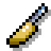 | Welder | Welds a hull plate over a breach or over stripped plating: hold the plate in the active hand and the welder in the other. With a welder in the active hand it also cuts through a wall whose plating was stripped (6 seconds), which opens the hull to space, and reinforces a worn wall by itself (4 seconds). | Construction Workshop, Machine Workshop (2), in a closet in the Construction Workshop, Station Engineer's kit |
| Screwdriver | Opens a door's maintenance panel, and closes it again (2 seconds). Stand next to the door and hold the screwdriver in the active hand; no access is needed. The wires inside are for wirecutters, a cable coil and a multitool. | Inverter Room, Battery Room, Air Works, Electrical Workshop (2), Machine Workshop (2), in a storage crate in the Crawlways by Solar Control, in a storage crate in the Crawlways by Air Works, in a closet in the Crawlways by Air Works, in a storage crate in the Crawlways by Botanics, in a closet in the Crawlways by Watch Tube, Station Engineer's kit, Scientist's kit | |
| Multitool | Pulses a wire in an open door panel, which is how a door is bolted, unbolted, tested or opened without a card: it does something to the bolts, bolt light and opening wires; a pulse on the others does nothing. | Transformer Room, Air Works, Electrical Workshop (2), Machine Workshop, Station Engineer's kit, Scientist's kit | |
| T-ray scanner | Hold it in a hand and the cables under the floor tiles within 6 tiles show on your screen, framed in cyan, and on a map with a pipe plant (Heron) the pipes there too, framed in green; put it away and they vanish. Only you see them. To cut, lay or wrench one, lift its tile with a crowbar first. | Construction Workshop, Station Engineer's kit | |
| Floor tile | What a crowbar lifts from a hallway or department floor. Carry it in a hand or a backpack; with it in the active hand, Lay floor tile covers a lifted tile again and hides the cable below. | Construction Workshop (4) | |
| Wrench | For tightening and loosening bolts. Nothing takes it yet: the pipes and the furniture bolts to come will. It rides on the toolbelt with the other tools and is on the shelf of the machine workshop. It can have a skin: six colours in the menu's Locker, all free for now. A skin belongs to the item itself and changes its look and nothing else. | Crawlways by Air Works, Air Works (3), Electrical Workshop, Construction Workshop, Machine Workshop, in a storage crate in the Crawlways by Station Master Berth, in a storage crate in the Crawlways by Registrar Office, in a closet in the Crawlways by Air Works, in a storage crate in the Crawlways by Solar Control, Station Engineer's kit, Scientist's kit | |
| Fire extinguisher | Hold it and tap Spray: a short white mist in front of you that everyone in view sees. It is harmless and puts nothing out yet: real fires come with the air works' fire stage, and then this is the tool for them. Too big for a pocket; it rides in the backpack. It lies in the crawlways. | Crawlways by Robotics, Air Works (2), Crawlways by Air Works, Crawlways by Stores Storage, in a closet in the Crawlways by Robotics, in a storage crate in the Crawlways by Station Master Berth, in a storage crate in the Crawlways by Registrar Office, in a storage crate in the Crawlways by Watch Tube, in a closet in the Crawlways by Air Works, in a closet in the Crawlways by Watch Tube (2), in a closet in the Air Works, in a storage crate in the Crawlways by Advocate's Chambers | |
| Candle | Hold it and tap Light candle (Snuff candle puts it out): a small flame that lights 2 tiles round it. A lit candle burns on wherever it is put down: on the floor, a table or a rack, so it makes a lamp. In a pocket, the bag or a crate it is out. It never burns down. The Chapel altar holds two, lit from the start; more lie in the crawlways. Small enough for a pocket. | Crawlways by EVA Airlock 2, Crawlways by Robotics, Crawlways by Stores Storage, Chapel (4), Crew Quarters (3), in a storage crate in the Crawlways by R&D, in a closet in the Crawlways by Robotics, in a storage crate in the Crawlways by Station Master Berth, in a storage crate in the Crawlways by Air Works, in a closet in the Crawlways by Air Works (4), in a closet in the Crawlways by Watch Tube, in a closet in the Crawlways by Quarters Tube, in a storage crate in the Crawlways by Botanics, in a storage crate in the Crawlways by Advocate's Chambers, Chaplain's kit | |
| Flashlight | Hold it and tap Light on: it shines 5 tiles round you, for everyone who can see you, and lifts the dark of a room or a tunnel without power around you so you can read it again. It shines while it is in a hand or clipped in a pocket (lit while held or clipped in a pocket, seen by everyone in view; switch it on or off in a hand, a pocket keeps its state). In the bag, on a belt, in a crate, set down or dropped, it is dark. It has no battery. Small enough for a pocket. It lies in the crawlways' racks, lockers and crates; the miners will carry one too. It can have a skin: six colours in the menu's Locker, all free for now. A skin belongs to the item itself and changes its look and nothing else. | Crawlways by Robotics, Crawlways by Air Works, in a storage crate in the Crawlways by Solar Control, in a closet in the Crawlways by Air Works (2), in a storage crate in the Crawlways by EVA Airlock 2, in a storage crate in the Crawlways by Registrar Office, in a closet in the Crawlways by Construction, in a closet in the Crawlways by Watch Tube (3), in a storage crate in the Crawlways by Botanics, in a closet in the Transformer Room, in a storage crate in the Crawlways by Advocate's Chambers, Hand's kit, Station Master's kit, Registrar's kit, Watch Officer's kit, Caretaker's kit, Miner's kit | |
| Shaker | A shaker. The Bartender starts with one in the backpack, and one stands in the bar. Hold it in one hand and a clean glass in the other and tap Shake: 8 drinks, each from two or three bottles. A pour of each comes out of the bottles you carry or that stand on a rack or table within reach. It is 3 seconds of work (half that for the Bartender), and the drink fills your glass. | Bar, Bartender's kit | |
| Squeegee | A long squeegee for the solar arrays. Hold it on the truss beside a dusty panel and tap Clean panel (8 seconds): the panel is wiped back to clean. Dirt settles on every panel all shift and each dusty panel costs the array a little. A rack in the Electrical Workshop keeps two. | Caretaker's Store, Electrical Workshop (2), in a closet in the Restroom, Caretaker's kit | |
| Grease can | A can of grease for an array's tracking joint. Hold it on the truss beside the array and tap Grease the joint (8 seconds): it takes the wear off the joint, so the array follows the sun again. A joint that has stuck needs its bolts tightened first (a wrench). A rack in the Electrical Workshop keeps two. | Electrical Workshop (2) | |
| Box of lightbulbs | A cardboard box of spare lightbulbs: a full one holds 6, and it is the same box with fewer in it as bulbs are used (the name says how many are left). Every room has a ceiling lamp whose bulb burns out now and then in a real shift (about one a room in 12 minutes, never more than 3 rooms dark at once): the part of the room more than 3 tiles from its lamp goes dark (a dark socket shows on the lamp). Hold the box beside the lamp and tap Replace bulb (3 seconds). The Caretaker's closet has more boxes. | Caretaker's Store (2), Caretaker's kit | |
| Thickness gauge | Hold it in a hand or a pocket and the outer walls within 6 tiles show a marker on your screen, through walls, with the plating left on each (green, amber, red). Only you see them. It shows wear before the eye can: a stain is a worn wall, a hairline crack a leak. Reinforce a worn wall with a welder; patch a cracked one with a plate and a welder. A rack in the Construction Workshop keeps one. | Construction Workshop | |
| Watering can (empty) | A watering can: it holds 4 waterings (0 of them now). Fill it at the sink in the greenhouse (Fill can, 3 seconds), then tap Water beside a tray (3 seconds, half that for the Botanist): the tray's water rises by 50. | Botanics (2), Botanist's kit | |
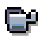 | Watering can (1/4) | A watering can: it holds 4 waterings (1 of them now). Fill it at the sink in the greenhouse (Fill can, 3 seconds), then tap Water beside a tray (3 seconds, half that for the Botanist): the tray's water rises by 50. | — |
| Watering can (1/2) | A watering can: it holds 4 waterings (2 of them now). Fill it at the sink in the greenhouse (Fill can, 3 seconds), then tap Water beside a tray (3 seconds, half that for the Botanist): the tray's water rises by 50. | — | |
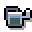 | Watering can (3/4) | A watering can: it holds 4 waterings (3 of them now). Fill it at the sink in the greenhouse (Fill can, 3 seconds), then tap Water beside a tray (3 seconds, half that for the Botanist): the tray's water rises by 50. | — |
| Watering can | A watering can: it holds 4 waterings (4 of them now). Fill it at the sink in the greenhouse (Fill can, 3 seconds), then tap Water beside a tray (3 seconds, half that for the Botanist): the tray's water rises by 50. | — | |
| Fertilizer sack (1 use) | A fertilizer sack: 5 uses at full (1 left in this one). Tap Fertilize beside a tray (4 seconds, half that for the Botanist): its nutrients rise by 50, and a well fed plant grows faster and gives one more produce. Stores sells a full sack for 3 supply points; the compost bin fills a sack again. | — | |
| Fertilizer sack (2 uses) | A fertilizer sack: 5 uses at full (2 left in this one). Tap Fertilize beside a tray (4 seconds, half that for the Botanist): its nutrients rise by 50, and a well fed plant grows faster and gives one more produce. Stores sells a full sack for 3 supply points; the compost bin fills a sack again. | — | |
| Fertilizer sack (3 uses) | A fertilizer sack: 5 uses at full (3 left in this one). Tap Fertilize beside a tray (4 seconds, half that for the Botanist): its nutrients rise by 50, and a well fed plant grows faster and gives one more produce. Stores sells a full sack for 3 supply points; the compost bin fills a sack again. | — | |
| Fertilizer sack (4 uses) | A fertilizer sack: 5 uses at full (4 left in this one). Tap Fertilize beside a tray (4 seconds, half that for the Botanist): its nutrients rise by 50, and a well fed plant grows faster and gives one more produce. Stores sells a full sack for 3 supply points; the compost bin fills a sack again. | — | |
| Fertilizer sack | A fertilizer sack: 5 uses at full (5 left in this one). Tap Fertilize beside a tray (4 seconds, half that for the Botanist): its nutrients rise by 50, and a well fed plant grows faster and gives one more produce. Stores sells a full sack for 3 supply points; the compost bin fills a sack again. | Botanics, request console order (3 points) | |
| Plant spray (1 use) | A plant spray: 4 uses at full. Tap Treat beside a tray with blight or aphids (5 seconds, half that for the Botanist) to cure it before it spreads. Stores sells a full one for 2 supply points. | — | |
| Plant spray (2 uses) | A plant spray: 4 uses at full. Tap Treat beside a tray with blight or aphids (5 seconds, half that for the Botanist) to cure it before it spreads. Stores sells a full one for 2 supply points. | — | |
| Plant spray (3 uses) | A plant spray: 4 uses at full. Tap Treat beside a tray with blight or aphids (5 seconds, half that for the Botanist) to cure it before it spreads. Stores sells a full one for 2 supply points. | — | |
| Plant spray | A plant spray: 4 uses at full. Tap Treat beside a tray with blight or aphids (5 seconds, half that for the Botanist) to cure it before it spreads. Stores sells a full one for 2 supply points. | Botanics, request console order (2 points) | |
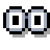 | Handcuffs | A pair of steel handcuffs; the Watch Officer carries two. Hold them and tap Cuff beside someone (3 seconds), or tap a person who is stunned or down: they must stay where they stand, or the cuffs slip off. A cuffed player cannot use their hands (nothing is picked up, dropped, worn or worked), walks one tick slower per step, and may still talk and be searched. A Watch Officer or the Station Master takes cuffs off in 2 seconds; anyone else needs 10 seconds and a free hand, and keeps the cuffs. They also come off when a cell sentence ends. | in a closet in the Armory (3), Watch Officer's kit |
| Mop | The Caretaker's mop. Hold it with a bucket that has water left in your other hand, stand within 2 tiles of a puddle and tap Mop floor (2 seconds, one dip of the bucket per puddle). It clears puddles only: there is no blood, and the floor decals of the map stay. | Caretaker's Store (2), Caretaker's kit | |
| Bucket (empty) | A mop bucket, holding up to 4 dips (the name says how many are left). Fill it at a sink (the restroom's, the Botanics' or any wash basin) with Fill bucket (4 seconds). Tap Spill the bucket to empty what is in it on the floor as one puddle: nothing else to do with it, apart from the mop. | Caretaker's Store (2), Caretaker's kit | |
| Bucket (1 dip) | A mop bucket, holding up to 4 dips (the name says how many are left). Fill it at a sink (the restroom's, the Botanics' or any wash basin) with Fill bucket (4 seconds). Tap Spill the bucket to empty what is in it on the floor as one puddle: nothing else to do with it, apart from the mop. | — | |
| Bucket (2 dips) | A mop bucket, holding up to 4 dips (the name says how many are left). Fill it at a sink (the restroom's, the Botanics' or any wash basin) with Fill bucket (4 seconds). Tap Spill the bucket to empty what is in it on the floor as one puddle: nothing else to do with it, apart from the mop. | — | |
| Bucket (3 dips) | A mop bucket, holding up to 4 dips (the name says how many are left). Fill it at a sink (the restroom's, the Botanics' or any wash basin) with Fill bucket (4 seconds). Tap Spill the bucket to empty what is in it on the floor as one puddle: nothing else to do with it, apart from the mop. | — | |
| Bucket | A mop bucket, holding up to 4 dips (the name says how many are left). Fill it at a sink (the restroom's, the Botanics' or any wash basin) with Fill bucket (4 seconds). Tap Spill the bucket to empty what is in it on the floor as one puddle: nothing else to do with it, apart from the mop. | — | |
| Wet floor sign | A yellow wet floor sign, for stations with gravity (Millrace and Kestrel; Heron is weightless, nobody slips there and it has none). Tap Place wet floor sign on a free floor tile within reach: nobody slips on that tile for 2 minutes, then the sign lies there again to pick up. The Caretaker carries two there. | Caretaker's kit | |
| Box of lightbulbs (5) | A cardboard box of spare lightbulbs: a full one holds 6, and it is the same box with fewer in it as bulbs are used (the name says how many are left). Every room has a ceiling lamp whose bulb burns out now and then in a real shift (about one a room in 12 minutes, never more than 3 rooms dark at once): the part of the room more than 3 tiles from its lamp goes dark (a dark socket shows on the lamp). Hold the box beside the lamp and tap Replace bulb (3 seconds). The Caretaker's closet has more boxes. | — | |
| Box of lightbulbs (4) | A cardboard box of spare lightbulbs: a full one holds 6, and it is the same box with fewer in it as bulbs are used (the name says how many are left). Every room has a ceiling lamp whose bulb burns out now and then in a real shift (about one a room in 12 minutes, never more than 3 rooms dark at once): the part of the room more than 3 tiles from its lamp goes dark (a dark socket shows on the lamp). Hold the box beside the lamp and tap Replace bulb (3 seconds). The Caretaker's closet has more boxes. | — | |
| Box of lightbulbs (3) | A cardboard box of spare lightbulbs: a full one holds 6, and it is the same box with fewer in it as bulbs are used (the name says how many are left). Every room has a ceiling lamp whose bulb burns out now and then in a real shift (about one a room in 12 minutes, never more than 3 rooms dark at once): the part of the room more than 3 tiles from its lamp goes dark (a dark socket shows on the lamp). Hold the box beside the lamp and tap Replace bulb (3 seconds). The Caretaker's closet has more boxes. | — | |
| Box of lightbulbs (2) | A cardboard box of spare lightbulbs: a full one holds 6, and it is the same box with fewer in it as bulbs are used (the name says how many are left). Every room has a ceiling lamp whose bulb burns out now and then in a real shift (about one a room in 12 minutes, never more than 3 rooms dark at once): the part of the room more than 3 tiles from its lamp goes dark (a dark socket shows on the lamp). Hold the box beside the lamp and tap Replace bulb (3 seconds). The Caretaker's closet has more boxes. | — | |
| Box of lightbulbs (1) | A cardboard box of spare lightbulbs: a full one holds 6, and it is the same box with fewer in it as bulbs are used (the name says how many are left). Every room has a ceiling lamp whose bulb burns out now and then in a real shift (about one a room in 12 minutes, never more than 3 rooms dark at once): the part of the room more than 3 tiles from its lamp goes dark (a dark socket shows on the lamp). Hold the box beside the lamp and tap Replace bulb (3 seconds). The Caretaker's closet has more boxes. | — | |
| Ore bag | A canvas bag for ore: it holds 6 chunks and is carried in a hand (too big for a backpack). Drilling with the bag in the other hand puts the ore straight into it, and Pick up from the rock does too. At the refinery, with the bag in the active hand, Load ore tips out as much as the hopper (12) takes. The bag also takes loose ore from the floor beside you (Pick up, even with both hands full) while it is in a hand or on the belt's hook, and Empty bag sets all its ore down round your feet, or, beside the refinery, pours it straight into the hopper. | Mining Dock, Miner's kit | |
| Hand drill | The Miner's hand drill. On the mine site (an airless field of rock reached by the mining shuttle; no rope) hold it in the active hand within 2 tiles of a deposit that still has ore and tap Drill ore (4 seconds, a chunk at a time; a deposit holds 2 or 3 chunks, then it is bare for the rest of the shift). Iron-rich deposits give iron ore, copper-rich ones copper ore, the rare ones a crystal. | Mining Dock, Miner's kit | |
| Pipe | A piece of pipe, turned at the lathe in the Machine Workshop (2 plates, 6 seconds). A Station Engineer holding it taps Lay pipe on a gap in the plant's pipes (where a pipe was cut or taken out: the tile shows a dark gap) and the piece is laid and secured. It never starts a new run: the plant is built, and is only repaired. A loose pipe can be pulled off its bracket (Pull pipe: the piece then follows you, one tile behind, like a crate, and a gap is left); pick it up or drag it to a gap and lay it there. | — | |
| Valve kit | The parts of a valve, turned at the lathe in the Machine Workshop (3 plates, 10 seconds). A Station Engineer holding it taps Fit the valve kit beside a broken valve (it wears a red cross) and the machine works again. | — | |
| Pump kit | The parts of a pump, turned at the lathe in the Machine Workshop (4 plates, 14 seconds). A Station Engineer holding it taps Fit the pump kit beside a broken pump (it wears a red cross) and the machine works again. | — | |
| Vent kit | The parts of a vent, turned at the lathe in the Machine Workshop (2 plates, 8 seconds). A Station Engineer holding it taps Fit the vent kit beside a broken vent (it wears a red cross) and the machine works again. | — | |
| Scrubber kit | The parts of a scrubber, turned at the lathe in the Machine Workshop (2 plates, 8 seconds). A Station Engineer holding it taps Fit the scrubber kit beside a broken scrubber (it wears a red cross) and the machine works again. | — | |
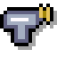 | Taser | A hand taser: hold it and tap the map where you want to shoot, or tap the person: a bolt flies along the exact line from you through your tap, one tile at a time, up to 5 tiles (a wall or a shut door stops it), and hits the first person standing on its tile when it gets there. Nothing aims for you: tapping a person only sets the direction, and someone who steps out of the line in time is missed. The Stun button in the list still fires at the nearest person in a straight line. The bolt locks their muscles for 5 seconds (no steps, no work) and does no damage. It needs 12 seconds to recharge before the next shot. It will not fire at someone who is cuffed or down. Use it to stop someone who is a danger to others, from a distance, and then cuff them: the Standing Orders say to use the least force that works. | in a closet in the Armory (3), Watch Officer's kit |
| Baton | A short baton: hold it and tap someone beside you (within one tile) to strike them; a tap on someone farther away does nothing but flash Too far. A blow does 6 brute damage and stuns them for 2 seconds; there is a second between blows. It will not strike someone who is cuffed, down or dead (Station Law: a detained person is not struck). Striking a crew member is a Class 2 offence unless the officer is stopping a danger; keep it for the last step, after the taser and the spray, and write it in the report. | in a closet in the Armory (3), Watch Officer's kit | |
| Pepper spray | A can of pepper spray: hold it and tap toward someone: the spray flies 2 tiles along the exact line and blinds the first person it reaches. Their eyes close and burn and they cannot see for 8 seconds (the screen goes dark as with burned eyes, then clears by itself) unless they wear welding goggles or an EVA helmet. It needs 15 seconds before the next puff, and will not spray someone who is cuffed or down. Use it to make a crowd or a runner stop and listen, before any stronger force. | in a closet in the Armory (3), Watch Officer's kit | |
| Plunger | The Caretaker's plunger. Stand within reach of a clogged waste pipe (the map shows the clog hanging from the ceiling) with it in the active hand and tap Clear clog (3 seconds, the Caretaker twice as fast). It is not used up. One lies in the Caretaker's Store. | Caretaker's Store | |
| Oxygen cylinder | A gas cylinder of oxygen from the supply console (10 points). Too big for a backpack. Beside the gas cylinder port in Air Works, with a wrench in the other hand, tap Wrench the cylinder onto the port: it empties 30000 moles into the plant's O2 store in 20 seconds, then the empty cylinder lies beside the port. | request console order (10 points), the supply console, for 10 points | |
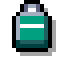 | Nitrogen cylinder | A gas cylinder of nitrogen from the supply console (10 points). Too big for a backpack. Beside the gas cylinder port in Air Works, with a wrench in the other hand, tap Wrench the cylinder onto the port: it empties 30000 moles into the plant's N2 store in 20 seconds, then the empty cylinder lies beside the port. | request console order (10 points), the supply console, for 10 points |
| Empty gas cylinder | A gas cylinder that has been emptied into the plant. Carry it to the delivery pad in the Stores Bay and ship it with the pad: 2 supply points. Too big for a backpack. | a gas cylinder emptied into its store at the port | |
| Servo set | Servo set: a part of the Robotics bench (built from hull plate and copper bar). In the other hand with a screwdriver in the active one, it is fitted into a robot's joints: the work takes half the time and the robot is set right. The Pressure gasket and the Haul drone are built from one. It goes in a backpack. | the Robotics bench, once the Servo sets project is released (its prototype is built from a reviewed finding) | |
| Sealing gasket | Sealing gasket: a part of the Robotics bench (built from hull plate and base reagent). A cut ring that holds pressure: the Pressure gasket, the Haul drone's rotor and the Shielded visor are built from one. It goes in a backpack. | the Robotics bench (a plate and a base reagent): a part, no research needed | |
| Pressure gasket | A pressure gasket (built from servo set and sealing gasket). In the active hand with a welder in the other, it patches a breach, a stripped wall or a cracked wall in half the time and without a hull plate (Patch breach); it is used up. It comes from a finished project: the first one is a prototype in its field trial, and a prototype may weep and fail. | the Robotics bench, once the Pressure gasket project is released | |
| Haul drone | A haul drone (built from servo set and hull plate). Beside the delivery pad with a crate on it, hold the drone and tap Send the crate with the drone: the crate lands by the request console 12 seconds later and the drone is used up. A prototype drone may fail and drop out of the air. | the Robotics bench, once the Haul drone project is released | |
| Floor lamp | A tall floor lamp, lit from the start in the Hub, the Crew Quarters and the Library of Heron. Stand beside it and tap Lamp off (or Lamp on): it is switched where it stands. Pick it up with a free hand (too big for a pocket) and tap Lamp on or Lamp off to carry its light: 4 tiles round it, seen by everyone in view, and it burns on when it is put down. An off lamp gives no light at all. It costs the phone nothing: one light, like a candle. A floor lamp that is part of a station, as on Cairn, is switched the same way, cannot be carried and shines only while its room has power. | Library, Crew Quarters (2), Central Hub (5), Bar | |
| Lighter | A small lighter, lit with a thumb: hold it in the active hand and tap Light the flag beside a flag (lying within a tile or in your other hand). It does not run out. It lies on the Chapel altar. It can have a skin: six colours in the menu's Locker, all free for now. A skin belongs to the item itself and changes its look and nothing else. | Chapel | |
| Box of matches (5) | A box of matches; the name says how many are left (five when new). Hold it in the active hand and tap Light the flag beside a flag: one match is struck and used up, and the box is gone with the last. One lies in the crawlways' lockers. | Crawlways by Stores Storage, Chapel | |
| Box of matches (4) | A box of matches; the name says how many are left (five when new). Hold it in the active hand and tap Light the flag beside a flag: one match is struck and used up, and the box is gone with the last. One lies in the crawlways' lockers. | — | |
| Box of matches (3) | A box of matches; the name says how many are left (five when new). Hold it in the active hand and tap Light the flag beside a flag: one match is struck and used up, and the box is gone with the last. One lies in the crawlways' lockers. | — | |
| Box of matches (2) | A box of matches; the name says how many are left (five when new). Hold it in the active hand and tap Light the flag beside a flag: one match is struck and used up, and the box is gone with the last. One lies in the crawlways' lockers. | — | |
| Box of matches (1) | A box of matches; the name says how many are left (five when new). Hold it in the active hand and tap Light the flag beside a flag: one match is struck and used up, and the box is gone with the last. One lies in the crawlways' lockers. | — | |
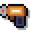 | Heat gun | An orange heat gun with a grey nozzle, the Engineer's tool against ice on Cairn Station. Hold it in the active hand and stand beside a frozen heating pipe that lies open (in a crawlway or the plant room, or under a floor tile a crowbar has lifted): tap Thaw pipe, a timed job of 8 seconds. It thaws the frozen stretch, 2 tiles either way along the pipe. A thawed pipe in a room that is still freezing will freeze again in a minute unless the loop is running: thaw from the boiler outwards, or set the pump to Low and let the hot water do it. | the rack and the closet of Heat Control, and the Generator Shed, on Cairn Station |
| Forensic scanner | A slate-blue handheld with a violet lens and a small green screen, the Watch Officer's forensic scanner. Hold it in the active hand and tap a tile within 2 tiles of you, or tap Scan here: a timed job of 6 seconds that lifts the traces lying within 2 tiles of the tile (a fingerprint, a fibre, blood, a residue; the eye sees none of them) into the scanner's memory (the last 6 are kept) and prints a Trace slip: what, where, how old, and a coarse pattern code such as whorl-3, never a name. Traces fade in about four minutes and a mop or a crowd of people wipes them out, so scan early. | in a closet in the Armory, the armory's closet in the Watch Office (one to a station) | |
| Sled | The Storekeeper's sled, a long orange hull on two runners, kept in the Sled Shed on Cairn Station. It cannot be picked up: tap it and Pull it, and it follows your steps, over the ice of the yard as over the floor (Release lets go). It is a cart for the ice: Load crate puts a crate beside you on it (it carries 6 crates, twice a cart's) and Unload crate puts the last one down. A drift of snow across the yard's sled lane stops it until a shovel clears the way. On Millrace Station it waits in the Moon Pool: pulled, it dives with you and comes up with you, what it carries too: the Storekeeper's way to bring in the crates lowered from above. It is a stretcher too: with somebody unconscious beside you, tap Lay on the sled and pull them in; Lift off the sled puts them down. | the Sled Shed on Cairn Station and the Moon Pool on Millrace Station | |
| Shovel | A snow shovel, a broad blue blade on a long wooden shaft, from the Caretaker's Store and the Sled Shed on Cairn Station. Hold it in the active hand beside a drift of snow on the yard's sled lane and tap Shovel the drift (6 seconds): the drift is gone and the sled passes. Drifts form on the lane now and then, never more than 3 at a time. | the racks of the Caretaker's Store and the Sled Shed on Cairn Station | |
| Pledge banner | A cream cloth banner with a red stripe, hung from a dark crossbar: a pledge, carried in the hands. Its words are fixed ("We, the undersigned, ask the Station Master to hear the crew about the ration packs."); nobody writes on it. Anyone who is not its carrier, the Station Master, the Registrar or a Watch Officer, and who stands within 2 tiles of it, may tap Sign the pledge: their name goes on its list, the people near see it, and Take my name off puts it back as it was. Read the list shows who has signed. Only a story role gives a banner; the carrier prints a Pledge list from it (the names as they stand) and gets it to the Station Master's or the Registrar's office by fax or cabinet before the deadline. | only a story role gives one: the Organiser carries it |
Medical
| Item | What it does | Where to get one | |
|---|---|---|---|
| First aid kit | Hold it and tap Treat beside someone within reach (or Treat yourself): 30 points off the worst of their damage (the kit is not used up), and the unconscious wake. Or tap Open first aid kit: it opens into a box at your feet holding 3 bandages, 2 burn ointments, 2 antitoxin pills and an epinephrine pen, which you take out one at a time from its list. Too big for a belt: carry it in hand or in your backpack. | Infirmary (3), in a closet in the Infirmary, in a closet in the Crew Quarters, in a cabinet in the Chemistry (2), in a cabinet in the Infirmary (2), Medical Doctor's kit, request console order (5 points) | |
| Defibrillator | Brings back someone who died less than 3 minutes ago; they get up with 20 health and still need treatment. | Infirmary, Medical Doctor's kit | |
| Cold medicine | Take it when you have a cold or the flu: hold it and tap Take medicine. You are well in 30 seconds instead of the full 4 minutes (cold) or 7 minutes (flu). Used up. The Infirmary keeps some. It does nothing for someone who is not sick. | Infirmary (3), in a cabinet in the Chemistry (5) | |
| Health analyzer | Hold it and tap Scan beside someone within reach (or Scan yourself): after 2 seconds of keeping still it lists, to you alone, their health, whether they are alive, unconscious or dead, any cold or flu and how far along it is, burned eyes and how hungry they are, and the four kinds of damage in numbers (brute, burn, toxin, oxygen). A cold or flu in its first stage, before any symptom, shows nothing here: only a stethoscope hears it. Nobody else is told. The Medical Doctor starts with one on the medical belt; spares are on an Infirmary table and in the Infirmary closet. | Infirmary, in a closet in the Infirmary, Medical Doctor's kit | |
| Bandage | A one-use treatment for brute damage. Hold it and tap Treat beside someone (or Treat yourself): after 3 seconds (a Medical Doctor takes half that) it takes 15 points off their brute damage; anyone else, without the first aid skill of the Heron logbook, takes off only 50 percent of that. The health analyzer lists the four kinds of damage. It fits the medical belt, a pocket and a backpack, and comes in the first aid kit, the Infirmary cabinets and (made from reagents) at Chemistry. | Infirmary (2), in a cabinet in the Chemistry (4), Miner's kit | |
| Burn ointment | A one-use treatment for burn damage. Hold it and tap Treat beside someone (or Treat yourself): after 3 seconds (a Medical Doctor takes half that) it takes 15 points off their burn damage; anyone else, without the first aid skill of the Heron logbook, takes off only 50 percent of that. The health analyzer lists the four kinds of damage. It fits the medical belt, a pocket and a backpack, and comes in the first aid kit, the Infirmary cabinets and (made from reagents) at Chemistry. | Infirmary, in a cabinet in the Chemistry (3) | |
| Antitoxin pill | A one-use treatment for toxin damage. Hold it and tap Treat beside someone (or Treat yourself): after 3 seconds (a Medical Doctor takes half that) it takes 15 points off their toxin damage; anyone else, without the first aid skill of the Heron logbook, takes off only 50 percent of that. The health analyzer lists the four kinds of damage. It fits the medical belt, a pocket and a backpack, and comes in the first aid kit, the Infirmary cabinets and (made from reagents) at Chemistry. | in a cabinet in the Chemistry (3) | |
| Epinephrine pen | A one-use treatment for oxygen damage. Hold it and tap Treat beside someone (or Treat yourself): after 2 seconds (a Medical Doctor takes half that) it takes 20 points off their oxygen damage; anyone else, without the first aid skill of the Heron logbook, takes off only 50 percent of that. The health analyzer lists the four kinds of damage. It fits the medical belt, a pocket and a backpack, and comes in the first aid kit, the Infirmary cabinets and (made from reagents) at Chemistry. It also wakes someone who is unconscious for 10 seconds, even when their health stays at 0: they fall again after it. | in a cabinet in the Chemistry, Miner's kit | |
| Morphine syringe | A restricted painkiller, kept in the locked cabinet between the Infirmary and Chemistry, on Millrace Station in the Infirmary's own locked cabinet (a medical card opens it) and made at the Chemistry dispenser from all three reagents. Hold it and tap Inject morphine: you are numb for 3 minutes, and hurt below 30 health (which otherwise slows your steps and your work) slows you no more. It heals nothing and does not hide how hurt you are from a scan. | in a cabinet in the Infirmary (2) | |
| Surgery kit | A scalpel set. A Medical Doctor holding it, beside a patient who lies on the operating table of the Surgery, taps Operate and picks a procedure from the list: Treat eyes (cures the welding burn), Remove toxins (40 points off the toxin damage) or Repair wounds (40 points off the brute damage), 20 seconds each. A patient who gets up cancels it. No anaesthesia is needed. A surgeon without latex gloves and a sterile mask risks infecting the patient, and so does one with unwashed hands (wash at a sink first: 40 percent for a wound infection, which an antibiotic cures). On Cairn Station the list has a fourth procedure, Treat frostbite, for a frozen hand or foot (see the saline bag). A Medical Cadet may operate too, but the operation takes only 70 times in a hundred; a failed one does nothing and may be tried again. It lies on the Surgery's instrument tray. | Surgery | |
| Base reagent | A base reagent for the Chemistry dispenser. Carry the reagents a recipe needs (hands, pockets, belt, backpack) and tap Chemistry beside the dispenser. The shift's stock lies on the racks of the Chemistry room; Stores sells more for 2 supply points each. | Chemistry (4), request console order (2 points) | |
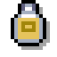 | Acid reagent | A acid reagent for the Chemistry dispenser. Carry the reagents a recipe needs (hands, pockets, belt, backpack) and tap Chemistry beside the dispenser. The shift's stock lies on the racks of the Chemistry room; Stores sells more for 2 supply points each. | Chemistry (4), request console order (2 points) |
| Salt reagent | A salt reagent for the Chemistry dispenser. Carry the reagents a recipe needs (hands, pockets, belt, backpack) and tap Chemistry beside the dispenser. The shift's stock lies on the racks of the Chemistry room; Stores sells more for 2 supply points each. | Chemistry (4), request console order (2 points) | |
| Flu antiviral | Take it when you have a cold or the flu: hold it and tap Take the antiviral. You are well in 10 seconds instead of the full time (cold medicine takes 30 seconds). Used up. Made at the Chemistry dispenser from an acid and a salt reagent. It does nothing for someone who is not sick. | — | |
| Opened first aid kit | An opened first aid kit lying on the floor: tap Open the first aid kit beside it for its list, take what you need out one at a time, and put treatments back in (it takes nothing else). When the last thing is out it is thrown away. It cannot be picked up. | — | |
| Antibiotic pill | A pill that cures a wound infection (the sickness a patient gets from an operation with unwashed hands): hold it and tap Take the antibiotic, and the infection is gone in 5 seconds. It does nothing for a cold or the flu (those need cold medicine or the antiviral) and is not used up on someone who is well. A Medical Doctor keeps it on the medical belt; the Infirmary's cabinet holds some and Chemistry presses more from an acid and a base reagent. | Infirmary, in a cabinet in the Chemistry (2) | |
| Splint | A splint (built from hull plate and base reagent). Hold it and tap Treat beside someone hurt: it takes 25 brute damage off in 4 seconds (half for the Medical Doctor) and is used up (a layman heals only half). A prototype splint may buckle. | the Robotics bench, once the Splint lattice project is released | |
| Culture swab | A culture swab (built from salt reagent and base reagent). A surgeon who carries one uses it on the next operation: the patient's risk of an infection is halved. A prototype swab may be spoiled. | the Robotics bench, once the Culture swab project is released | |
| Heat blanket | A silver foil blanket with a red heating strip, from the racks of the Ward and the Rewarming Bay on Cairn Station. Hold it and tap Wrap beside a cold patient (or yourself): 5 seconds of work, then the patient is wrapped for 3 minutes, which warms the core slowly and takes the Chill off. A Medical Doctor, or a reader of the first aid book, gives the whole warmth; anyone else gives 50 percent of it. One use. | the racks of the Ward and the Rewarming Bay on Cairn Station | |
| Saline bag | A bag of warm saline on a drip line, from the saline stand of the Rewarming Bay. It is the drip of the frostbite operation: a Medical Doctor with the surgery kit in the active hand and a bag carried taps Operate beside a patient who lies in the tub, a bed or on the operating table and picks Treat frostbite (20 seconds). The bag is used up. | the saline stand of the Rewarming Bay on Cairn Station |
Food, drink and plants
| Item | What it does | Where to get one | |
|---|---|---|---|
| Wheat seeds | Plant it in a planting tray in the greenhouse: hold it, stand beside an empty tray and tap Plant (2 seconds). The wheat is grain for bread: it ripens after 150 seconds of care, drinks about 20 water and eats 12 nutrients a minute, and a good harvest gives 2 produce and the seed back, so the greenhouse never runs out. The Botanist's seed pouch holds one. Small enough for a pocket. Stores sells a seed for 2 supply points. | Botanics (2), Botanist's kit, request console order (2 points) | |
| Tomato seeds | Plant it in a planting tray in the greenhouse: hold it, stand beside an empty tray and tap Plant (2 seconds). The tomato is red and juicy: it ripens after 3 minutes of care, drinks about 24 water and eats 16 nutrients a minute, and a good harvest gives 2 produce and the seed back, so the greenhouse never runs out. The Botanist's seed pouch holds one. Small enough for a pocket. Stores sells a seed for 2 supply points. | Botanics (2), Botanist's kit, request console order (2 points) | |
| Bean seeds | Plant it in a planting tray in the greenhouse: hold it, stand beside an empty tray and tap Plant (2 seconds). The bean is fixes its own nutrients: it ripens after 210 seconds of care, drinks about 14 water and eats 6 nutrients a minute, and a good harvest gives 2 produce and the seed back, so the greenhouse never runs out. The Botanist's seed pouch holds one. Small enough for a pocket. Stores sells a seed for 2 supply points. | Botanics (2), Botanist's kit, request console order (2 points) | |
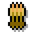 | Wheat | Produce from the greenhouse: put it in the pass-through cabinet for the Chef, or onto a stove to cook it. Goes into flatbread (2 wheat) and malt tea (wheat). | in a cabinet in the Kitchen (2) |
| Tomatoes | Produce from the greenhouse: put it in the pass-through cabinet for the Chef, or onto a stove to cook it. Goes into tomato pilaf (rice and tomatoes), bean stew (beans and tomatoes), tomato soup (2 tomatoes) and tomato fizz (tomatoes). | in a cabinet in the Kitchen | |
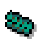 | Beans | Produce from the greenhouse: put it in the pass-through cabinet for the Chef, or onto a stove to cook it. Goes into protein skillet (protein block and beans), rice bowl (rice and beans) and bean stew (beans and tomatoes). | in a cabinet in the Kitchen |
| Protein block | Ordered from Stores at the supply console (4 supply points). Cooked with beans on a stove it makes a protein skillet; with a potato and an onion, the harvest hash, the biggest meal of the kitchen. | in a cabinet in the Kitchen, request console order (4 points) | |
| Young wheat | A young plant growing in a tray. It ripens in a while if it has water; nobody picks it up. | — | |
| Young tomato plant | A young plant growing in a tray. It ripens in a while if it has water; nobody picks it up. | — | |
| Young bean plant | A young plant growing in a tray. It ripens in a while if it has water; nobody picks it up. | — | |
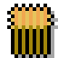 | Ripe wheat | A ripe plant in a tray: stand beside it and tap Harvest (3 seconds) for 2 produce (half of that when it was neglected) and the seed back. | — |
| Ripe tomato plant | A ripe plant in a tray: stand beside it and tap Harvest (3 seconds) for 2 produce (half of that when it was neglected) and the seed back. | — | |
| Ripe bean plant | A ripe plant in a tray: stand beside it and tap Harvest (3 seconds) for 2 produce (half of that when it was neglected) and the seed back. | — | |
| Flatbread | A dish from the kitchen. Hold it and tap Eat (3 seconds): it fills 30 percent of the hunger meter. It does not spoil. Made from 2 wheat at the stove. | — | |
| Tomato soup | A dish from the kitchen. Hold it and tap Eat (3 seconds): it fills 33 percent of the hunger meter. It does not spoil. Made from 2 tomatoes at the stove. | — | |
| Bean stew | A dish from the kitchen. Hold it and tap Eat (3 seconds): it fills 42 percent of the hunger meter. It does not spoil. Made from beans and tomatoes at the stove. | — | |
| Protein skillet | A dish from the kitchen. Hold it and tap Eat (3 seconds): it fills 60 percent of the hunger meter. It does not spoil. Made from protein block and beans at the stove. | — | |
| Ration pack | A ration pack from the dispenser (one each 90 seconds for everybody). Hold it and tap Eat (3 seconds): it fills 35 percent of the hunger meter, less than a cooked meal. Small enough for a pocket. | — | |
| Tomato fizz | A drink of the bar. Mix tomatoes at the bar's mixer into a clean glass. Hold it and tap Drink (3 seconds): it fills 6 percent of the hunger meter, and the used glass stays in your hand. It is a soft one: it never makes anyone tipsy. | made at the bar (see the Bartender's drink list) | |
| Malt tea | A drink of the bar. Mix wheat at the bar's mixer into a clean glass. Hold it and tap Drink (3 seconds): it fills 5 percent of the hunger meter, and the used glass stays in your hand. It is a soft one, and it leaves you Comforted for 1 minute. On Cairn Station it takes 20 off the Chill and warms the core. | made at the bar (see the Bartender's drink list) | |
| Orchard juice | A bottle for the bar: 6 of its 6 pours are left. Poured into an empty glass it makes Orchard Glass. The shaker takes it for Solar Spritz, Airlock Sour, Re-entry, Quiet Shift. An empty bottle is gone; Stores sells a full one for 2 supply points. | Bar (2), request console order (2 points) | |
| Sweet syrup | A bottle for the bar: 6 of its 6 pours are left. The shaker takes it for Nebula Fizz, Pressure Ridge, Abyss Glow, Quiet Shift. An empty bottle is gone; Stores sells a full one for 2 supply points. | Bar (2), request console order (2 points) | |
| Amber ferment | A bottle for the bar: 6 of its 6 pours are left. The shaker takes it for Solar Spritz, Nebula Fizz, Dry Dock. An empty bottle is gone; Stores sells a full one for 2 supply points. | Bar, request console order (2 points) | |
| Bitters | A bottle for the bar: 6 of its 6 pours are left. The shaker takes it for Airlock Sour, Dry Dock, Re-entry, Abyss Glow. An empty bottle is gone; Stores sells a full one for 2 supply points. | Bar, request console order (2 points) | |
| Solar Spritz | A drink of the bar. Shake orchard juice and amber ferment into an empty glass. Hold it and tap Drink (3 seconds): it fills 7 percent of the hunger meter, and the used glass stays in your hand. It is a strong one: 3 of them within 4 minutes make you tipsy (see Service jobs): a light, short wobble, no harm. | made at the bar (see the Bartender's drink list) | |
| Nebula Fizz | A drink of the bar. Shake amber ferment and sweet syrup into an empty glass. Hold it and tap Drink (3 seconds): it fills 7 percent of the hunger meter, and the used glass stays in your hand. It is a strong one: 3 of them within 4 minutes make you tipsy (see Service jobs): a light, short wobble, no harm. | made at the bar (see the Bartender's drink list) | |
| Airlock Sour | A drink of the bar. Shake orchard juice and bitters into an empty glass. Hold it and tap Drink (3 seconds): it fills 6 percent of the hunger meter, and the used glass stays in your hand. It is a strong one: 3 of them within 4 minutes make you tipsy (see Service jobs): a light, short wobble, no harm. | made at the bar (see the Bartender's drink list) | |
| Dry Dock | A drink of the bar. Shake amber ferment and bitters into an empty glass. Hold it and tap Drink (3 seconds): it fills 6 percent of the hunger meter, and the used glass stays in your hand. It is a strong one: 3 of them within 4 minutes make you tipsy (see Service jobs): a light, short wobble, no harm. | made at the bar (see the Bartender's drink list) | |
| Potato seeds | Plant it in a planting tray in the greenhouse: hold it, stand beside an empty tray and tap Plant (2 seconds). The potato is the staple of the station: it ripens after 3 minutes of care, drinks about 16 water and eats 16 nutrients a minute, and a good harvest gives 3 produce and the seed back, so the greenhouse never runs out. The Botanist's seed pouch holds one. Small enough for a pocket. Stores sells a seed for 2 supply points. | Botanics (2), Botanist's kit, request console order (2 points) | |
| Rice seeds | Plant it in a planting tray in the greenhouse: hold it, stand beside an empty tray and tap Plant (2 seconds). The rice is thirsty, grows wet: it ripens after 4 minutes of care, drinks about 30 water and eats 14 nutrients a minute, and a good harvest gives 2 produce and the seed back, so the greenhouse never runs out. The Botanist's seed pouch holds one. Small enough for a pocket. Stores sells a seed for 2 supply points. | Botanics (2), Botanist's kit, request console order (2 points) | |
| Corn seeds | Plant it in a planting tray in the greenhouse: hold it, stand beside an empty tray and tap Plant (2 seconds). The corn is hungry for nutrients: it ripens after 270 seconds of care, drinks about 20 water and eats 22 nutrients a minute, and a good harvest gives 2 produce and the seed back, so the greenhouse never runs out. The Botanist's seed pouch holds one. Small enough for a pocket. Stores sells a seed for 2 supply points. | Botanics (2), Botanist's kit, request console order (2 points) | |
| Carrot seeds | Plant it in a planting tray in the greenhouse: hold it, stand beside an empty tray and tap Plant (2 seconds). The carrot is quick and generous: it ripens after 150 seconds of care, drinks about 14 water and eats 10 nutrients a minute, and a good harvest gives 3 produce and the seed back, so the greenhouse never runs out. The Botanist's seed pouch holds one. Small enough for a pocket. Stores sells a seed for 2 supply points. | Botanics (2), Botanist's kit, request console order (2 points) | |
| Onion seeds | Plant it in a planting tray in the greenhouse: hold it, stand beside an empty tray and tap Plant (2 seconds). The onion is flavours broths and stews: it ripens after 3 minutes of care, drinks about 12 water and eats 10 nutrients a minute, and a good harvest gives 2 produce and the seed back, so the greenhouse never runs out. The Botanist's seed pouch holds one. Small enough for a pocket. Stores sells a seed for 2 supply points. | Botanics (2), Botanist's kit, request console order (2 points) | |
| Apple seeds | Plant it in a planting tray in the greenhouse: hold it, stand beside an empty tray and tap Plant (2 seconds). The apple is a tree-like crop, slow but generous: it ripens after 6 minutes of care, drinks about 10 water and eats 14 nutrients a minute, and a good harvest gives 3 produce and the seed back, so the greenhouse never runs out. Seeds lie on the greenhouse racks. Small enough for a pocket. Stores sells a seed for 2 supply points. | Botanics (2), request console order (2 points) | |
| Mushroom spores | Plant it in a planting tray in the greenhouse: hold it, stand beside an empty tray and tap Plant (2 seconds). The mushroom is fast and small: it ripens after 2 minutes of care, drinks about 12 water and eats 8 nutrients a minute, and a good harvest gives 1 produce and the seed back, so the greenhouse never runs out. Seeds lie on the greenhouse racks. Small enough for a pocket. Stores sells a seed for 2 supply points. | Botanics (2), request console order (2 points) | |
| Beet seeds | Plant it in a planting tray in the greenhouse: hold it, stand beside an empty tray and tap Plant (2 seconds). The sugar beet is sugar for the kitchen and the bar: it ripens after 4 minutes of care, drinks about 14 water and eats 12 nutrients a minute, and a good harvest gives 2 produce and the seed back, so the greenhouse never runs out. Seeds lie on the greenhouse racks. Small enough for a pocket. Stores sells a seed for 2 supply points. | Botanics (2), request console order (2 points) | |
| Potatoes | Produce from the greenhouse: put it in the pass-through cabinet for the Chef, or onto a stove to cook it. Goes into harvest hash (protein block and potatoes and onions), vegetable stew (carrots and potatoes and onions), corn chowder (corn cobs and potatoes and onions), potato soup (potatoes and onions), fried potato strips (2 potatoes) and baked potato (potatoes). | in a cabinet in the Kitchen | |
| Rice | Produce from the greenhouse: put it in the pass-through cabinet for the Chef, or onto a stove to cook it. Goes into tomato pilaf (rice and tomatoes) and rice bowl (rice and beans). | — | |
| Corn cobs | Produce from the greenhouse: put it in the pass-through cabinet for the Chef, or onto a stove to cook it. Goes into corn chowder (corn cobs and potatoes and onions). | — | |
| Carrots | Produce from the greenhouse: put it in the pass-through cabinet for the Chef, or onto a stove to cook it. Goes into vegetable stew (carrots and potatoes and onions) and carrot salad (2 carrots). | — | |
| Onions | Produce from the greenhouse: put it in the pass-through cabinet for the Chef, or onto a stove to cook it. Goes into harvest hash (protein block and potatoes and onions), vegetable stew (carrots and potatoes and onions), corn chowder (corn cobs and potatoes and onions), mushroom pan (mushrooms and onions), potato soup (potatoes and onions) and onion broth (2 onions). | in a cabinet in the Kitchen | |
| Apples | Produce from the greenhouse: put it in the pass-through cabinet for the Chef, or onto a stove to cook it. Goes into fruit compote (apples and beet sugar). | — | |
| Mushrooms | Produce from the greenhouse: put it in the pass-through cabinet for the Chef, or onto a stove to cook it. Goes into mushroom pan (mushrooms and onions). | — | |
| Sugar beets | Produce from the greenhouse: put it in the pass-through cabinet for the Chef, or onto a stove to cook it. Goes into beet sugar (sugar beets). The mixer turns it into sugar. | — | |
| Young potato plant | A young plant growing in a tray. It ripens in a while if it has water; nobody picks it up. | — | |
| Young rice | A young plant growing in a tray. It ripens in a while if it has water; nobody picks it up. | — | |
| Young corn | A young plant growing in a tray. It ripens in a while if it has water; nobody picks it up. | — | |
| Young carrot | A young plant growing in a tray. It ripens in a while if it has water; nobody picks it up. | — | |
| Young onion | A young plant growing in a tray. It ripens in a while if it has water; nobody picks it up. | — | |
| Young apple tree | A young plant growing in a tray. It ripens in a while if it has water; nobody picks it up. | — | |
| Young mushrooms | A young plant growing in a tray. It ripens in a while if it has water; nobody picks it up. | — | |
| Young beet | A young plant growing in a tray. It ripens in a while if it has water; nobody picks it up. | — | |
| Ripe potato plant | A ripe plant in a tray: stand beside it and tap Harvest (3 seconds) for 3 produce (half of that when it was neglected) and the seed back. | — | |
| Ripe rice | A ripe plant in a tray: stand beside it and tap Harvest (3 seconds) for 2 produce (half of that when it was neglected) and the seed back. | — | |
| Ripe corn | A ripe plant in a tray: stand beside it and tap Harvest (3 seconds) for 2 produce (half of that when it was neglected) and the seed back. | — | |
| Ripe carrots | A ripe plant in a tray: stand beside it and tap Harvest (3 seconds) for 3 produce (half of that when it was neglected) and the seed back. | — | |
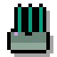 | Ripe onions | A ripe plant in a tray: stand beside it and tap Harvest (3 seconds) for 2 produce (half of that when it was neglected) and the seed back. | — |
| Ripe apple tree | A ripe plant in a tray: stand beside it and tap Harvest (3 seconds) for 3 produce (half of that when it was neglected) and the seed back. | — | |
| Ripe mushrooms | A ripe plant in a tray: stand beside it and tap Harvest (3 seconds) for 1 produce (half of that when it was neglected) and the seed back. | — | |
| Ripe beets | A ripe plant in a tray: stand beside it and tap Harvest (3 seconds) for 2 produce (half of that when it was neglected) and the seed back. | — | |
| Beet sugar | Sugar from the sugar beet, made at the bar's mixer (3 seconds). It is an ingredient: the fruit compote needs it, and the polar station's warm drinks at the mixer. | — | |
| Weeds | Weeds pulled from a tray (hold them and tap Compost weeds at the compost bin: every 6 of them make a fertilizer use). Nobody eats them. | — | |
| Fried potato strips | A dish from the kitchen. Hold it and tap Eat (3 seconds): it fills 38 percent of the hunger meter. It does not spoil. Made from 2 potatoes at the stove. | — | |
| Baked potato | A dish from the kitchen. Hold it and tap Eat (3 seconds): it fills 28 percent of the hunger meter. It does not spoil. Made from potatoes at the stove. | — | |
| Potato soup | A dish from the kitchen. Hold it and tap Eat (3 seconds): it fills 40 percent of the hunger meter. It does not spoil. Made from potatoes and onions at the stove. | — | |
| Rice bowl | A dish from the kitchen. Hold it and tap Eat (3 seconds): it fills 45 percent of the hunger meter. It does not spoil. Made from rice and beans at the stove. | — | |
| Corn chowder | A dish from the kitchen. Hold it and tap Eat (3 seconds): it fills 56 percent of the hunger meter. It does not spoil. Made from corn cobs and potatoes and onions at the stove. | — | |
| Vegetable stew | A dish from the kitchen. Hold it and tap Eat (3 seconds): it fills 52 percent of the hunger meter. It does not spoil. Made from carrots and potatoes and onions at the stove. | — | |
| Carrot salad | A dish from the kitchen. Hold it and tap Eat (3 seconds): it fills 25 percent of the hunger meter. It does not spoil. Made from 2 carrots at the stove. | — | |
| Onion broth | A dish from the kitchen. Hold it and tap Eat (3 seconds): it fills 26 percent of the hunger meter. It does not spoil. Made from 2 onions at the stove. | — | |
| Fruit compote | A dish from the kitchen. Hold it and tap Eat (3 seconds): it fills 34 percent of the hunger meter. It does not spoil. Made from apples and beet sugar at the stove. | — | |
| Mushroom pan | A dish from the kitchen. Hold it and tap Eat (3 seconds): it fills 38 percent of the hunger meter. It does not spoil. Made from mushrooms and onions at the stove. | — | |
| Tomato pilaf | A dish from the kitchen. Hold it and tap Eat (3 seconds): it fills 47 percent of the hunger meter. It does not spoil. Made from rice and tomatoes at the stove. | — | |
| Harvest hash | A dish from the kitchen. Hold it and tap Eat (3 seconds): it fills 65 percent of the hunger meter. It does not spoil. Made from protein block and potatoes and onions at the stove. | — | |
| Frozen rations | A frozen block of rations, the cold chain's stock on Cairn Station. It keeps while the air round it is under 2 C (the Cold Cellar and the Cold Store, the open ice, an insulated crate); in a warm room it thaws after 2 minutes and a thawed ration spoils after 4 minutes more. Carried, it thaws in your pocket as it would on a table. The Chef makes a Ration stew of it with a potato and an onion: the best hot meal the kitchen cooks. | request console order (5 points), the Cold Store on Cairn Station, the request console (5 points, in an insulated crate) and the supply flights | |
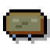 | Thawed rations | A block of rations that has thawed, grey-brown and dripping. It does not freeze again. The Chef can still make a thin stew of it with a potato and an onion; left in a warm room it spoils after 4 minutes. A cold room does not spoil it, only stops the clock. | frozen rations that stood in a warm room too long |
| Spoiled rations | Rations that stood warm too long: green, dark and no use to anyone. Throw them in a disposal bin. | thawed rations that stood in a warm room too long | |
| Ration stew | A bowl of ration stew from fresh (frozen) rations, a potato and an onion: it fills 64 percent of the hunger meter and is the best hot meal on Cairn Station. It takes 45 off the Chill and keeps the core warming faster for 150 seconds. | the Chef's stove on Cairn Station: frozen rations, a potato and an onion | |
| Thin stew | A thin stew from thawed rations, a potato and an onion: it fills 38 percent of the hunger meter and warms less than a ration stew (25 off the Chill, the core warming faster for 90 seconds). | the Chef's stove on Cairn Station: thawed rations, a potato and an onion | |
| Hearth cup | A drink of the bar. On Cairn Station, mix malt tea and beet sugar at the bar's mixer into a clean glass. Hold it and tap Drink (3 seconds): it fills 7 percent of the hunger meter, and the used glass stays in your hand. It is a strong one: 3 of them within 4 minutes make you tipsy (see Service jobs): a light, short wobble, no harm. On Cairn Station it takes 30 off the Chill and warms the core. | the bar's mixer on Cairn Station: a malt tea and beet sugar | |
| Warm cordial | A drink of the bar. On Cairn Station, mix apples and beet sugar at the bar's mixer into a clean glass. Hold it and tap Drink (3 seconds): it fills 6 percent of the hunger meter, and the used glass stays in your hand. It is a soft one, and it leaves you Comforted for 1 minute. On Cairn Station it takes 25 off the Chill and warms the core. | the bar's mixer on Cairn Station: an apple and beet sugar | |
| Glass | A clean drinking glass, from the bar's glass rack. Fill it with a bottle in your other hand (Pour), at the bar's tap (Pour from the tap), with the shaker (Shake) or at the mixer. Add ice puts ice in it first. | Bar (12) | |
| Used glass | A used glass. Wash it at a sink (Wash glass, 2 seconds, half that for the Bartender), then put it back on the glass rack. A drink that was drunk or spilled leaves one. | a drink that was drunk or spilled | |
| Glass of ice | A clean glass with ice in it. Pour a bottle onto it for the iced drink, or shake or mix a drink into it. | ice added to an empty glass at the bar | |
| Orbit white | A bottle for the bar: 6 of its 6 pours are left. Poured into an empty glass it makes Zero Point. The shaker takes it for Re-entry, Pressure Ridge. An empty bottle is gone; Stores sells a full one for 3 supply points. | Bar (2), request console order (3 points) | |
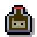 | Trench dark | A bottle for the bar: 6 of its 6 pours are left. Poured into an empty glass it makes Deep Measure. The shaker takes it for Abyss Glow. An empty bottle is gone; Stores sells a full one for 3 supply points. | Bar (2), request console order (3 points) |
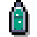 | Brine tonic | A bottle for the bar: 6 of its 6 pours are left. Poured onto Zero Point it makes Long Orbit. The shaker takes it for Pressure Ridge. An empty bottle is gone; Stores sells a full one for 2 supply points. | Bar (2), request console order (2 points) |
| Pressure soda | A bottle for the bar: 6 of its 6 pours are left. Poured onto Deep Measure it makes Black Tide. Poured onto Orchard Glass it makes Greenhouse Cooler. The shaker takes it for Quiet Shift. An empty bottle is gone; Stores sells a full one for 2 supply points. | Bar (2), request console order (2 points) | |
| Orchard juice (5 pours) | A bottle for the bar: 5 of its 6 pours are left. Poured into an empty glass it makes Orchard Glass. The shaker takes it for Solar Spritz, Airlock Sour, Re-entry, Quiet Shift. An empty bottle is gone; Stores sells a full one for 2 supply points. | a bottle that was poured from | |
| Orchard juice (4 pours) | A bottle for the bar: 4 of its 6 pours are left. Poured into an empty glass it makes Orchard Glass. The shaker takes it for Solar Spritz, Airlock Sour, Re-entry, Quiet Shift. An empty bottle is gone; Stores sells a full one for 2 supply points. | a bottle that was poured from | |
| Orchard juice (3 pours) | A bottle for the bar: 3 of its 6 pours are left. Poured into an empty glass it makes Orchard Glass. The shaker takes it for Solar Spritz, Airlock Sour, Re-entry, Quiet Shift. An empty bottle is gone; Stores sells a full one for 2 supply points. | a bottle that was poured from | |
| Orchard juice (2 pours) | A bottle for the bar: 2 of its 6 pours are left. Poured into an empty glass it makes Orchard Glass. The shaker takes it for Solar Spritz, Airlock Sour, Re-entry, Quiet Shift. An empty bottle is gone; Stores sells a full one for 2 supply points. | a bottle that was poured from | |
| Orchard juice (1 pour) | A bottle for the bar: 1 of its 6 pours are left. Poured into an empty glass it makes Orchard Glass. The shaker takes it for Solar Spritz, Airlock Sour, Re-entry, Quiet Shift. An empty bottle is gone; Stores sells a full one for 2 supply points. | a bottle that was poured from | |
| Sweet syrup (5 pours) | A bottle for the bar: 5 of its 6 pours are left. The shaker takes it for Nebula Fizz, Pressure Ridge, Abyss Glow, Quiet Shift. An empty bottle is gone; Stores sells a full one for 2 supply points. | a bottle that was poured from | |
| Sweet syrup (4 pours) | A bottle for the bar: 4 of its 6 pours are left. The shaker takes it for Nebula Fizz, Pressure Ridge, Abyss Glow, Quiet Shift. An empty bottle is gone; Stores sells a full one for 2 supply points. | a bottle that was poured from | |
| Sweet syrup (3 pours) | A bottle for the bar: 3 of its 6 pours are left. The shaker takes it for Nebula Fizz, Pressure Ridge, Abyss Glow, Quiet Shift. An empty bottle is gone; Stores sells a full one for 2 supply points. | a bottle that was poured from | |
| Sweet syrup (2 pours) | A bottle for the bar: 2 of its 6 pours are left. The shaker takes it for Nebula Fizz, Pressure Ridge, Abyss Glow, Quiet Shift. An empty bottle is gone; Stores sells a full one for 2 supply points. | a bottle that was poured from | |
| Sweet syrup (1 pour) | A bottle for the bar: 1 of its 6 pours are left. The shaker takes it for Nebula Fizz, Pressure Ridge, Abyss Glow, Quiet Shift. An empty bottle is gone; Stores sells a full one for 2 supply points. | a bottle that was poured from | |
| Amber ferment (5 pours) | A bottle for the bar: 5 of its 6 pours are left. The shaker takes it for Solar Spritz, Nebula Fizz, Dry Dock. An empty bottle is gone; Stores sells a full one for 2 supply points. | a bottle that was poured from | |
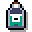 | Amber ferment (4 pours) | A bottle for the bar: 4 of its 6 pours are left. The shaker takes it for Solar Spritz, Nebula Fizz, Dry Dock. An empty bottle is gone; Stores sells a full one for 2 supply points. | a bottle that was poured from |
| Amber ferment (3 pours) | A bottle for the bar: 3 of its 6 pours are left. The shaker takes it for Solar Spritz, Nebula Fizz, Dry Dock. An empty bottle is gone; Stores sells a full one for 2 supply points. | a bottle that was poured from | |
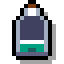 | Amber ferment (2 pours) | A bottle for the bar: 2 of its 6 pours are left. The shaker takes it for Solar Spritz, Nebula Fizz, Dry Dock. An empty bottle is gone; Stores sells a full one for 2 supply points. | a bottle that was poured from |
| Amber ferment (1 pour) | A bottle for the bar: 1 of its 6 pours are left. The shaker takes it for Solar Spritz, Nebula Fizz, Dry Dock. An empty bottle is gone; Stores sells a full one for 2 supply points. | a bottle that was poured from | |
| Bitters (5 pours) | A bottle for the bar: 5 of its 6 pours are left. The shaker takes it for Airlock Sour, Dry Dock, Re-entry, Abyss Glow. An empty bottle is gone; Stores sells a full one for 2 supply points. | a bottle that was poured from | |
| Bitters (4 pours) | A bottle for the bar: 4 of its 6 pours are left. The shaker takes it for Airlock Sour, Dry Dock, Re-entry, Abyss Glow. An empty bottle is gone; Stores sells a full one for 2 supply points. | a bottle that was poured from | |
| Bitters (3 pours) | A bottle for the bar: 3 of its 6 pours are left. The shaker takes it for Airlock Sour, Dry Dock, Re-entry, Abyss Glow. An empty bottle is gone; Stores sells a full one for 2 supply points. | a bottle that was poured from | |
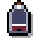 | Bitters (2 pours) | A bottle for the bar: 2 of its 6 pours are left. The shaker takes it for Airlock Sour, Dry Dock, Re-entry, Abyss Glow. An empty bottle is gone; Stores sells a full one for 2 supply points. | a bottle that was poured from |
| Bitters (1 pour) | A bottle for the bar: 1 of its 6 pours are left. The shaker takes it for Airlock Sour, Dry Dock, Re-entry, Abyss Glow. An empty bottle is gone; Stores sells a full one for 2 supply points. | a bottle that was poured from | |
| Orbit white (5 pours) | A bottle for the bar: 5 of its 6 pours are left. Poured into an empty glass it makes Zero Point. The shaker takes it for Re-entry, Pressure Ridge. An empty bottle is gone; Stores sells a full one for 3 supply points. | a bottle that was poured from | |
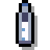 | Orbit white (4 pours) | A bottle for the bar: 4 of its 6 pours are left. Poured into an empty glass it makes Zero Point. The shaker takes it for Re-entry, Pressure Ridge. An empty bottle is gone; Stores sells a full one for 3 supply points. | a bottle that was poured from |
| Orbit white (3 pours) | A bottle for the bar: 3 of its 6 pours are left. Poured into an empty glass it makes Zero Point. The shaker takes it for Re-entry, Pressure Ridge. An empty bottle is gone; Stores sells a full one for 3 supply points. | a bottle that was poured from | |
| Orbit white (2 pours) | A bottle for the bar: 2 of its 6 pours are left. Poured into an empty glass it makes Zero Point. The shaker takes it for Re-entry, Pressure Ridge. An empty bottle is gone; Stores sells a full one for 3 supply points. | a bottle that was poured from | |
| Orbit white (1 pour) | A bottle for the bar: 1 of its 6 pours are left. Poured into an empty glass it makes Zero Point. The shaker takes it for Re-entry, Pressure Ridge. An empty bottle is gone; Stores sells a full one for 3 supply points. | a bottle that was poured from | |
| Trench dark (5 pours) | A bottle for the bar: 5 of its 6 pours are left. Poured into an empty glass it makes Deep Measure. The shaker takes it for Abyss Glow. An empty bottle is gone; Stores sells a full one for 3 supply points. | a bottle that was poured from | |
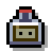 | Trench dark (4 pours) | A bottle for the bar: 4 of its 6 pours are left. Poured into an empty glass it makes Deep Measure. The shaker takes it for Abyss Glow. An empty bottle is gone; Stores sells a full one for 3 supply points. | a bottle that was poured from |
| Trench dark (3 pours) | A bottle for the bar: 3 of its 6 pours are left. Poured into an empty glass it makes Deep Measure. The shaker takes it for Abyss Glow. An empty bottle is gone; Stores sells a full one for 3 supply points. | a bottle that was poured from | |
| Trench dark (2 pours) | A bottle for the bar: 2 of its 6 pours are left. Poured into an empty glass it makes Deep Measure. The shaker takes it for Abyss Glow. An empty bottle is gone; Stores sells a full one for 3 supply points. | a bottle that was poured from | |
| Trench dark (1 pour) | A bottle for the bar: 1 of its 6 pours are left. Poured into an empty glass it makes Deep Measure. The shaker takes it for Abyss Glow. An empty bottle is gone; Stores sells a full one for 3 supply points. | a bottle that was poured from | |
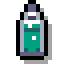 | Brine tonic (5 pours) | A bottle for the bar: 5 of its 6 pours are left. Poured onto Zero Point it makes Long Orbit. The shaker takes it for Pressure Ridge. An empty bottle is gone; Stores sells a full one for 2 supply points. | a bottle that was poured from |
| Brine tonic (4 pours) | A bottle for the bar: 4 of its 6 pours are left. Poured onto Zero Point it makes Long Orbit. The shaker takes it for Pressure Ridge. An empty bottle is gone; Stores sells a full one for 2 supply points. | a bottle that was poured from | |
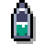 | Brine tonic (3 pours) | A bottle for the bar: 3 of its 6 pours are left. Poured onto Zero Point it makes Long Orbit. The shaker takes it for Pressure Ridge. An empty bottle is gone; Stores sells a full one for 2 supply points. | a bottle that was poured from |
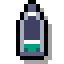 | Brine tonic (2 pours) | A bottle for the bar: 2 of its 6 pours are left. Poured onto Zero Point it makes Long Orbit. The shaker takes it for Pressure Ridge. An empty bottle is gone; Stores sells a full one for 2 supply points. | a bottle that was poured from |
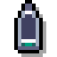 | Brine tonic (1 pour) | A bottle for the bar: 1 of its 6 pours are left. Poured onto Zero Point it makes Long Orbit. The shaker takes it for Pressure Ridge. An empty bottle is gone; Stores sells a full one for 2 supply points. | a bottle that was poured from |
| Pressure soda (5 pours) | A bottle for the bar: 5 of its 6 pours are left. Poured onto Deep Measure it makes Black Tide. Poured onto Orchard Glass it makes Greenhouse Cooler. The shaker takes it for Quiet Shift. An empty bottle is gone; Stores sells a full one for 2 supply points. | a bottle that was poured from | |
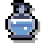 | Pressure soda (4 pours) | A bottle for the bar: 4 of its 6 pours are left. Poured onto Deep Measure it makes Black Tide. Poured onto Orchard Glass it makes Greenhouse Cooler. The shaker takes it for Quiet Shift. An empty bottle is gone; Stores sells a full one for 2 supply points. | a bottle that was poured from |
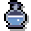 | Pressure soda (3 pours) | A bottle for the bar: 3 of its 6 pours are left. Poured onto Deep Measure it makes Black Tide. Poured onto Orchard Glass it makes Greenhouse Cooler. The shaker takes it for Quiet Shift. An empty bottle is gone; Stores sells a full one for 2 supply points. | a bottle that was poured from |
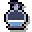 | Pressure soda (2 pours) | A bottle for the bar: 2 of its 6 pours are left. Poured onto Deep Measure it makes Black Tide. Poured onto Orchard Glass it makes Greenhouse Cooler. The shaker takes it for Quiet Shift. An empty bottle is gone; Stores sells a full one for 2 supply points. | a bottle that was poured from |
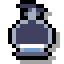 | Pressure soda (1 pour) | A bottle for the bar: 1 of its 6 pours are left. Poured onto Deep Measure it makes Black Tide. Poured onto Orchard Glass it makes Greenhouse Cooler. The shaker takes it for Quiet Shift. An empty bottle is gone; Stores sells a full one for 2 supply points. | a bottle that was poured from |
| Ice bucket | The bar's ice bucket: 6 of its 6 scoops of ice are left. With a glass in one hand tap Add ice, the bucket in the other hand or on a rack or table within reach. Refill it at the bar's mixer (Refill the ice bucket, 8 seconds, half that for the Bartender) or at once with an ice block from the yard of Cairn Station. | Bar | |
| Ice bucket (5 scoops) | The bar's ice bucket: 5 of its 6 scoops of ice are left. With a glass in one hand tap Add ice, the bucket in the other hand or on a rack or table within reach. Refill it at the bar's mixer (Refill the ice bucket, 8 seconds, half that for the Bartender) or at once with an ice block from the yard of Cairn Station. | the bar's ice bucket after ice was taken from it | |
| Ice bucket (4 scoops) | The bar's ice bucket: 4 of its 6 scoops of ice are left. With a glass in one hand tap Add ice, the bucket in the other hand or on a rack or table within reach. Refill it at the bar's mixer (Refill the ice bucket, 8 seconds, half that for the Bartender) or at once with an ice block from the yard of Cairn Station. | the bar's ice bucket after ice was taken from it | |
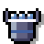 | Ice bucket (3 scoops) | The bar's ice bucket: 3 of its 6 scoops of ice are left. With a glass in one hand tap Add ice, the bucket in the other hand or on a rack or table within reach. Refill it at the bar's mixer (Refill the ice bucket, 8 seconds, half that for the Bartender) or at once with an ice block from the yard of Cairn Station. | the bar's ice bucket after ice was taken from it |
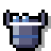 | Ice bucket (2 scoops) | The bar's ice bucket: 2 of its 6 scoops of ice are left. With a glass in one hand tap Add ice, the bucket in the other hand or on a rack or table within reach. Refill it at the bar's mixer (Refill the ice bucket, 8 seconds, half that for the Bartender) or at once with an ice block from the yard of Cairn Station. | the bar's ice bucket after ice was taken from it |
| Ice bucket (1 scoop) | The bar's ice bucket: 1 of its 6 scoops of ice are left. With a glass in one hand tap Add ice, the bucket in the other hand or on a rack or table within reach. Refill it at the bar's mixer (Refill the ice bucket, 8 seconds, half that for the Bartender) or at once with an ice block from the yard of Cairn Station. | the bar's ice bucket after ice was taken from it | |
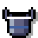 | Ice bucket (empty) | The bar's ice bucket: 0 of its 6 scoops of ice are left. With a glass in one hand tap Add ice, the bucket in the other hand or on a rack or table within reach. Refill it at the bar's mixer (Refill the ice bucket, 8 seconds, half that for the Bartender) or at once with an ice block from the yard of Cairn Station. | the bar's ice bucket after ice was taken from it |
| Keel Foam | A drink of the bar. Pour it from the bar's tap into an empty glass. Hold it and tap Drink (3 seconds): it fills 8 percent of the hunger meter, and the used glass stays in your hand. It is a strong one: 3 of them within 4 minutes make you tipsy (see Service jobs): a light, short wobble, no harm. | made at the bar (see the Bartender's drink list) | |
| Zero Point | A drink of the bar. Pour orbit white into an empty glass. Hold it and tap Drink (3 seconds): it fills 4 percent of the hunger meter, and the used glass stays in your hand. It is a strong one: 3 of them within 4 minutes make you tipsy (see Service jobs): a light, short wobble, no harm. | made at the bar (see the Bartender's drink list) | |
| Deep Measure | A drink of the bar. Pour trench dark into an empty glass. Hold it and tap Drink (3 seconds): it fills 4 percent of the hunger meter, and the used glass stays in your hand. It is a strong one: 3 of them within 4 minutes make you tipsy (see Service jobs): a light, short wobble, no harm. | made at the bar (see the Bartender's drink list) | |
| Orchard Glass | A drink of the bar. Pour orchard juice into an empty glass. Hold it and tap Drink (3 seconds): it fills 9 percent of the hunger meter, and the used glass stays in your hand. It is a soft one: it never makes anyone tipsy. | made at the bar (see the Bartender's drink list) | |
| Long Orbit | A drink of the bar. Pour brine tonic onto Zero Point. Hold it and tap Drink (3 seconds): it fills 6 percent of the hunger meter, and the used glass stays in your hand. It is a strong one: 3 of them within 4 minutes make you tipsy (see Service jobs): a light, short wobble, no harm. | made at the bar (see the Bartender's drink list) | |
| Black Tide | A drink of the bar. Pour pressure soda onto Deep Measure. Hold it and tap Drink (3 seconds): it fills 6 percent of the hunger meter, and the used glass stays in your hand. It is a strong one: 3 of them within 4 minutes make you tipsy (see Service jobs): a light, short wobble, no harm. | made at the bar (see the Bartender's drink list) | |
| Greenhouse Cooler | A drink of the bar. Pour pressure soda onto Orchard Glass. Hold it and tap Drink (3 seconds): it fills 12 percent of the hunger meter, and the used glass stays in your hand. It is a soft one, and it leaves you Comforted for 1 minute. | made at the bar (see the Bartender's drink list) | |
| Comet Core | A drink of the bar. Add ice to Zero Point, or pour its bottle onto a glass of ice. Hold it and tap Drink (3 seconds): it fills 4 percent of the hunger meter, and the used glass stays in your hand. It is a strong one: 3 of them within 4 minutes make you tipsy (see Service jobs): a light, short wobble, no harm. | made at the bar (see the Bartender's drink list) | |
| Cold Seep | A drink of the bar. Add ice to Deep Measure, or pour its bottle onto a glass of ice. Hold it and tap Drink (3 seconds): it fills 4 percent of the hunger meter, and the used glass stays in your hand. It is a strong one: 3 of them within 4 minutes make you tipsy (see Service jobs): a light, short wobble, no harm. | made at the bar (see the Bartender's drink list) | |
| Moon Pool Chill | A drink of the bar. Add ice to Orchard Glass, or pour its bottle onto a glass of ice. Hold it and tap Drink (3 seconds): it fills 10 percent of the hunger meter, and the used glass stays in your hand. It is a soft one, and it leaves you Comforted for 1 minute. | made at the bar (see the Bartender's drink list) | |
| Re-entry | A drink of the bar. Shake orbit white and orchard juice and bitters into an empty glass. Hold it and tap Drink (3 seconds): it fills 7 percent of the hunger meter, and the used glass stays in your hand. It is a strong one: 3 of them within 4 minutes make you tipsy (see Service jobs): a light, short wobble, no harm. | made at the bar (see the Bartender's drink list) | |
| Pressure Ridge | A drink of the bar. Shake orbit white and sweet syrup and brine tonic into an empty glass. Hold it and tap Drink (3 seconds): it fills 6 percent of the hunger meter, and the used glass stays in your hand. It is a strong one: 3 of them within 4 minutes make you tipsy (see Service jobs): a light, short wobble, no harm. | made at the bar (see the Bartender's drink list) | |
| Abyss Glow | A drink of the bar. Shake trench dark and sweet syrup and bitters into an empty glass. Hold it and tap Drink (3 seconds): it fills 6 percent of the hunger meter, and the used glass stays in your hand. It is a strong one: 3 of them within 4 minutes make you tipsy (see Service jobs): a light, short wobble, no harm. | made at the bar (see the Bartender's drink list) | |
| Quiet Shift | A drink of the bar. Shake orchard juice and sweet syrup and pressure soda into an empty glass. Hold it and tap Drink (3 seconds): it fills 13 percent of the hunger meter, and the used glass stays in your hand. It is a soft one, and it leaves you Comforted for 1 minute. | made at the bar (see the Bartender's drink list) |
Power and solar
| Item | What it does | Where to get one | |
|---|---|---|---|
| Battery cell | A spare cell for the battery bank, made at the lathe (3 plates, 20 seconds). Too big for a pocket or the bag: carried in the hands. At a cell rack in the Battery Room, a cell that has failed or run hot is cut out of the bank first, then swapped for this one (8 seconds each); the old cell goes back as a scrap plate. One spare lies on the Electrical Workshop rack (on Millrace Station, on a rack in the Battery Room). | Battery Room (2), Electrical Workshop | |
| Inverter module | A spare inverter module, made at the lathe (2 plates, 15 seconds). Carried in the hands. An inverter module whose fan or capacitors have worn out runs hot, gives less and then shuts itself down: tap its cabinet in the Inverter Room (on Millrace Station it stands in the Battery Room) and swap it for this one (8 seconds); the old module goes back as a scrap plate. One spare lies on the Electrical Workshop rack (on Millrace Station, on a rack in the Battery Room). | Inverter Room (2), Electrical Workshop | |
| Copper wire | A spool of copper wire, made at the lathe (1 plate, 8 seconds). The winding bench uses one up to rewind a transformer core (hold it and tap Rewind at the bench). One spare lies on the Electrical Workshop rack (on Millrace Station, on a table of the Machine Workshop). | Electrical Workshop | |
| Solar panel | A spare solar panel, made at the lathe (4 plates, 24 seconds). Carried in the hands. On the truss beside a cracked panel, hold it and tap Replace panel (20 seconds): the old panel is cut loose and the new one is clean and whole. It cannot go in the backpack. | — | |
| Bolts | A handful of bolts, made at the lathe (1 plate, 5 seconds). An array's frame whose bolts have worked loose is tightened with a wrench (8 seconds); if bolts are missing altogether, hold new bolts in the other hand: they are used up. | Machine Workshop | |
| Gantry crane | The transformer room's gantry crane on its wheels. It cannot be picked up: tap it and Pull it, and it follows your steps one tile behind you (Release lets go; walking more than two tiles away does too, and so does a wall, a closed door or furniture in the way). Beside the transformer it lifts the worn core out (10 seconds), beside the winding bench in the Electrical Workshop it sets the core down (5 seconds); then, once the core is rewound, back again. | — | |
| Lockout tag | A lockout tag, from the rack in the Transformer Room (one for each of the four breakers). Open a breaker, hold the tag and tap Hang the lockout tag on its panel: nobody can close that breaker until the tag comes off, and its panel says who locked it out (anyone may take the tag off again; it comes back to a free hand). It fits a pocket. | High-Voltage Kiosk (4) | |
| Earthing rod | The earthing rod, from the rack inside the high-voltage kiosk. When every breaker is open and tagged and the transformer has been tested dead with a multitool's meter, hold the rod and tap Attach the earthing rod at the transformer: it is dead and earthed, and no breaker can be closed until the rod is taken off. Only then will the crane lift or lower the core. | High-Voltage Kiosk | |
| Iron ore | A chunk of iron ore cut from a deposit on the mine site (Drill, 4 seconds, with the hand drill). It lies where it fell, or goes straight into an ore bag held in a hand. Load ore tips it into the refinery's hopper in the Mining Dock; Smelt (6 seconds) makes a hull plate of it. | — | |
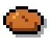 | Copper ore | A chunk of copper ore cut from a deposit on the mine site (Drill, 4 seconds, with the hand drill). It lies where it fell, or goes straight into an ore bag held in a hand. Load ore tips it into the refinery's hopper in the Mining Dock; Smelt (6 seconds) makes a copper bar of it. | — |
| Plain rock | A chunk of plain rock cut from a deposit on the mine site (Drill, 4 seconds, with the hand drill). It lies where it fell, or goes straight into an ore bag held in a hand. Load ore tips it into the refinery's hopper in the Mining Dock; Smelt (6 seconds) makes nothing: plain rock is waste (the slag is thrown away) of it. | — | |
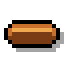 | Copper bar | A bar of copper from the refinery. Put it on the lathe in the Machine Workshop: copper wire is turned from one bar (or, as before, one plate), 8 seconds. | request console order (4 points) |
| Rotor bearing | A spare bearing for a seabed turbine rotor, turned at the lathe (2 plates, 15 seconds). A rotor whose bearing has worn gives less and less and at last seizes: from the walkway beside it (the dive suit, the tank and the safety rope), hold the bearing and tap New bearing in rotor (20 seconds). It is used up. | — | |
| Rotor seal | A spare seal for a turbine rotor's nacelle, turned at the lathe (1 plate, 10 seconds). A weeping seal wets the field's converter in Turbine Control until it trips on a ground fault; the weeping rotor looks flooded and bubbles from the walkway. Hold the seal beside the rotor and tap New seal in rotor (20 seconds): the nacelle is pumped dry and the seal is used up. Then reset the converter with a multitool. | — | |
| Rotor brush | A stiff brush for the seabed turbines, turned at the lathe (1 plate, 5 seconds). Marine growth settles on every rotor all shift and costs it output. Hold the brush on the walkway beside a rotor and tap Scrape rotor (10 seconds). It is not used up. Two lie on a Workshop rack. | — | |
| Dead battery cell | A dead battery cell: the part a repair took out. Put it in the scrap press in the Construction Workshop (hold it, tap Press, 6 seconds) and half the plates it was made of come back: 1. Too big for a backpack. | swapping out a battery cell that died | |
| Failed inverter module | A failed inverter module: the part a repair took out. Put it in the scrap press in the Construction Workshop (hold it, tap Press, 6 seconds) and half the plates it was made of come back: 1. Too big for a backpack. | swapping out a failed inverter module | |
| Cracked solar panel | A cracked solar panel: the part a repair took out. Put it in the scrap press in the Construction Workshop (hold it, tap Press, 6 seconds) and half the plates it was made of come back: 2. Too big for a backpack. | replacing a solar panel on the truss: the old one comes down in the hand | |
| Sensor board | Sensor board: a part of the Robotics bench (built from copper bar and salt reagent and hull plate). Beside a power monitor with it in the active hand, tap Fit the sensor board: the monitor then lists the plant's wearing parts and the seconds before their own warning light would show. Once a shift. It goes in a backpack. | the Robotics bench, once the Sensor board project is released |
Paperwork and books
| Item | What it does | Where to get one | |
|---|---|---|---|
| Stores stamp | The Stores stamp. Hold an order form with the stamp in your other hand or your backpack and Stamp it (1 second). It stamps a filled paper too (the record then says Stores), like every department's own stamp. | Stores Counter, Storekeeper's kit | |
| Order form | The supply console (the order console, where a map has two) prints one for every approved order. Stamp it with the stores stamp, then file it in the filing cabinet for 2 supply points. | printed by the supply console (the order console, where a map has two) for every approved order | |
| Stamped form | An order form with the stores stamp on it. File it in the filing cabinet for 2 supply points. | stamping an order form | |
| ID card | Your name, your job and the access your job gives. A powered door into a room that asks for access opens only for a card that has it, worn in the ID slot or held in the hand in use. To put it on, hold it in either hand and tap ID in Gear. It does not go in a belt or backpack, and the dead drop theirs. | everyone starts wearing one made for them | |
| Heron logbook | A book of the Library ("Log of the Heron"), on a Library bookshelf. Hold it and tap Read: a progress bar for 1 minute, and then you have learned basic first aid for the rest of the shift (a note says so; it goes if you die). Once a shift for each book. The book stays: put it back on a shelf with Put on shelf, or leave it for the next reader. On Millrace Station the library shelf stands in the Mess and Bar. | Library, Crawlways by Robotics, Electrical Workshop, Chapel, in a closet in the Crawlways by Air Works, in a closet in the Crawlways by Watch Tube (3) | |
| Seed and Soil | A book of the Library ("Seed and Soil"), on a Library bookshelf. Hold it and tap Read: a progress bar for 1 minute, and then you have learned basic wiring for the rest of the shift (a note says so; it goes if you die). Once a shift for each book. The book stays: put it back on a shelf with Put on shelf, or leave it for the next reader. On Millrace Station the library shelf stands in the Mess and Bar. | Library, Crawlways by Robotics, Air Works, in a closet in the Crawlways by Quarters Tube | |
| The Quiet Orbit | A book of the Library ("The Quiet Orbit"), on a Library bookshelf. Hold it and tap Read: a progress bar for 1 minute, and then you have learned basic cooking for the rest of the shift (a note says so; it goes if you die). Once a shift for each book. The book stays: put it back on a shelf with Put on shelf, or leave it for the next reader. On Millrace Station the library shelf stands in the Mess and Bar. | Library, Crawlways by Stores Storage, in a closet in the Crawlways by Robotics, in a closet in the Crawlways by Air Works (2), in a closet in the Crawlways by Watch Tube | |
| Station Law | The law of the station, in three classes of offence with their sentences (warnings, cell times of 1 to 15 minutes, duty restrictions and removal from the shift), the rights of the detained and how to petition an Advocate. Hold it and tap Read: its text opens in a list you scroll with a finger or the wheel, a paragraph a row. Copies stand on the Advocate's Chambers' shelf, in the Watch Office and on the Bridge. It teaches no skill and can be read again and again; the same text is on the website's Station Law page. | Advocate's Chambers, Watch Office, Bridge, Registrar's kit, Advocate's kit | |
| Standing Orders | How Watch works: its duties, the three alert levels (Calm, Swell, Gale) and what changes with each, searching and detaining, the use of Holding's cells (Lock 1 to 15 minutes, the belongings locker) and how to report. Hold it and tap Read: its text opens in a scrolling list. Copies stand on the Advocate's Chambers' shelf, in the Watch Office and on the Bridge. It teaches no skill; the same text is on the website's Standing Orders page. | Advocate's Chambers, Watch Office, Bridge, Station Master's kit, Advocate's kit | |
| Paper | A blank sheet of office paper, taken from the paper bin on the desk of the Station Master, the Registrar, the Advocate's Chambers, the Watch Office, the stores reception or the Infirmary (Take paper). Beside an office desk (a table or counter in a room with a fax machine) tap Paper and Fill in: a type (Petition, Request or Report) and a topic from a short list, with a pen in a hand or a pocket. Only the Advocate writes a Petition. Pick a topic from the list for the type, then who it is about from the crew list; the paper shows both. | in a closet in the Bridge (4), the paper bin on an office desk (Take paper) | |
| Filled paper | A paper with its type, topic and the sender's name on it. Whoever holds it can Read it (nobody else sees the words); a stamp in your other hand, pocket or backpack marks it Approved or Denied by the stamp's owner, once. Fax it to another office from a fax machine, or keep it in a file cabinet. It changes nothing by itself: the Watch Officer decides about a cell. | filling in a blank paper at an office desk, or a fax from another office | |
| Pen | A fountain pen. Filling in a paper needs one in a hand or a pocket (it fits a pocket). The Station Master, the Registrar, the Watch Officer, the Advocate and Storekeeper start with one in a pocket; spares lie on the desks of the Station Master's Office, the Registrar Office, the Advocate's Chambers, the Watch Office and the stores desk. Held in the hand in use it shows on your sprite in its own skin. A skin belongs to the pen itself: the one you picked in the menu's Locker (fifteen colours and textures, all free for now) goes on a plain pen when you start with it or pick it up, and stays on it when it is put down, put on a table or passed on, for everyone to see. A skin changes the look of the pen and nothing else. | Station Master's Office, Registrar's Office, Watch Office, Advocate's Chambers, Stores Counter, in a closet in the Bridge, Storekeeper's kit, Station Master's kit, Registrar's kit, Watch Officer's kit, Advocate's kit, Scientist's kit, Chaplain's kit | |
| Station Master stamp | The station master stamp: it lies on that office's desk. Hold it (a hand, pocket or backpack) and tap Paper with a filled paper in the other hand: Stamp it Approved or Denied, once. The paper says "by Station Master": anybody may use any stamp, but the record names the stamp's owner. With the stamp in a hand, a file cabinet's list stamps the lowest-numbered unstamped filed paper (Stamp: approved, Stamp: denied). It fits a pocket; it stamps no order form (that is the Stores stamp's work). | Station Master's Office | |
| Registrar stamp | The registrar stamp: it lies on that office's desk. Hold it (a hand, pocket or backpack) and tap Paper with a filled paper in the other hand: Stamp it Approved or Denied, once. The paper says "by Registrar": anybody may use any stamp, but the record names the stamp's owner. With the stamp in a hand, a file cabinet's list stamps the lowest-numbered unstamped filed paper (Stamp: approved, Stamp: denied). It fits a pocket; it stamps no order form (that is the Stores stamp's work). | Registrar's Office | |
| Watch stamp | The watch stamp: it lies on that office's desk. Hold it (a hand, pocket or backpack) and tap Paper with a filled paper in the other hand: Stamp it Approved or Denied, once. The paper says "by Watch": anybody may use any stamp, but the record names the stamp's owner. With the stamp in a hand, a file cabinet's list stamps the lowest-numbered unstamped filed paper (Stamp: approved, Stamp: denied). It fits a pocket; it stamps no order form (that is the Stores stamp's work). | Watch Office | |
| Law stamp | The law stamp: it lies on that office's desk. Hold it (a hand, pocket or backpack) and tap Paper with a filled paper in the other hand: Stamp it Approved or Denied, once. The paper says "by Law": anybody may use any stamp, but the record names the stamp's owner. With the stamp in a hand, a file cabinet's list stamps the lowest-numbered unstamped filed paper (Stamp: approved, Stamp: denied). It fits a pocket; it stamps no order form (that is the Stores stamp's work). | Advocate's Chambers | |
| Medical stamp | The medical stamp: it lies on that office's desk. Hold it (a hand, pocket or backpack) and tap Paper with a filled paper in the other hand: Stamp it Approved or Denied, once. The paper says "by Medical": anybody may use any stamp, but the record names the stamp's owner. With the stamp in a hand, a file cabinet's list stamps the lowest-numbered unstamped filed paper (Stamp: approved, Stamp: denied). It fits a pocket; it stamps no order form (that is the Stores stamp's work). | Infirmary | |
| Paper ream | A ream of blank paper, ordered at the supply console for 2 points. Beside a paper bin tap Paper bin and Add the paper ream: the bin takes 20 more sheets (it holds 60 at most). Too big for a backpack. | request console order (2 points), the supply console, for 2 points | |
| Science stamp | The science stamp: it lies on that office's desk. Hold it (a hand, pocket or backpack) and tap Paper with a filled paper in the other hand: Stamp it Approved or Denied, once. The paper says "by Science": anybody may use any stamp, but the record names the stamp's owner. With the stamp in a hand, a file cabinet's list stamps the lowest-numbered unstamped filed paper (Stamp: approved, Stamp: denied). It fits a pocket; it stamps no order form (that is the Stores stamp's work). | Research and Development | |
| Hymnal | The Chaplain's hymnal, a small dark blue book with a gold star. Hold it in the active hand in the Chapel and tap Conduct a service (15 seconds): everyone in the Chapel is Comforted. The Chaplain starts with one in the backpack. | Chapel, Chaplain's kit |
Clothing and gear
| Item | What it does | Where to get one | |
|---|---|---|---|
| Air tank | Keeps you breathing where the air is thin (below 50 kPa), but only in the storage of a worn EVA suit: wear the suit, hold the tank and tap Suit storage in Gear. In a hand, pocket or backpack it gives nothing. It empties as you breathe thin air (about 5 minutes from full; the suit panel shows the time left) and an empty tank stays an empty tank: the air is the tank's own (full, three quarters, a half, a quarter, empty), so a fresh one is always full. Refill it (6 seconds) at the filling point in an EVA airlock or at the air works tank filling station: a worn tank, or one held in the hand. Vacuum still crushes you unless you wear the EVA suit and helmet. | EVA Airlock (2), Main Airlock and Docking Port (2), Mining Dock (2), Air Works (6), in a closet in the Crew Quarters, in a closet in the Construction Workshop (2), in a closet in the Air Works (2), Station Engineer's kit, Medical Doctor's kit, Miner's kit, request console order (5 points) | |
| Toolbelt | Worn around the waist, it has 8 slots, each for wire cutters, a crowbar, a welder, a cable coil, a screwdriver, a multitool, a t-ray scanner or a wrench. Tap a slot above your hands to swap it with the hand in use. To put it on, hold it in either hand and tap Belt in Gear; tap Belt again to take it off into a free hand. | Machine Workshop, Station Engineer's kit, Scientist's kit | |
| Medical belt | Worn around the waist, it has 6 slots, each for a defibrillator, a health analyzer, a bandage, a burn ointment, an antitoxin pill, an epinephrine pen or an antibiotic pill. Tap a slot above your hands to swap it with the hand in use. To put it on, hold it in either hand and tap Belt in Gear; tap Belt again to take it off into a free hand. | Infirmary, Medical Doctor's kit | |
| Backpack | Worn on your back, it holds 6 things of any kind but belts, backpacks, suits and crates. The Bag button beside your hands lists them: putting in is quick, taking out takes 1 second. To put it on, hold it in either hand and tap Back in Gear; tap Back again to take it off into a free hand. | in a closet in the Crew Quarters, Hand's kit, Station Engineer's kit, Medical Doctor's kit, Storekeeper's kit, Botanist's kit, Chef's kit, Bartender's kit, Station Master's kit, Registrar's kit, Watch Officer's kit, Advocate's kit, Caretaker's kit, Miner's kit, Scientist's kit, Chaplain's kit | |
| EVA suit | Worn on the body, from a hand: hold it and tap Suit in Gear. With the EVA helmet it stops the crush of vacuum. A worn suit has storage for an air tank (tap Suit storage in Gear): only a tank there gives air. It goes in neither a belt nor a backpack. | Mining Dock, in a closet in the EVA Airlock (2), in a closet in the Construction Workshop (2) | |
| EVA helmet | Worn on the head, from a hand: hold it and tap Head in Gear. With the EVA suit it stops the crush of vacuum; you still need an air tank to breathe. | Mining Dock, in a closet in the EVA Airlock (2), in a closet in the Construction Workshop (2) | |
| Insulated gloves | Rubber gloves that keep a live cable from shocking you. Worn: hold them and tap Gloves in Gear. Without them, cutting a live cable or cutting or pulsing a wire of a door that has power is an electric shock (20 damage) and numbs your arms for 2 seconds. The Station Engineer starts wearing a pair; spares lie on the electrical workshop's rack. Construction work needs no gloves and carries no risk. | Transformer Room, Electrical Workshop, in a closet in the Electrical Workshop (2), Station Engineer's kit | |
 | Latex gloves | Thin sterile gloves for the doctor. Worn: hold them and tap Gloves in Gear. Treating or reviving someone without both latex gloves and a sterile mask risks catching a disease from the patient. Any gloves also make a cold or the flu a little harder to catch. The Medical Doctor starts wearing a pair; spares are in the Infirmary closet. | in a closet in the Infirmary (2), Medical Doctor's kit, Scientist's kit |
| Sterile mask | A sterile mask over mouth and nose. Worn: hold it and tap Mask in Gear. It cuts the chance of catching a cold or the flu to about a third, and the chance of passing one on by half; a doctor treating or reviving someone should wear it with latex gloves. The Medical Doctor starts wearing one; spares are in the Infirmary closet. | in a closet in the Infirmary (2), Medical Doctor's kit, Scientist's kit | |
| Welding goggles | Dark goggles against the welder's arc. Worn: hold them and tap Glasses in Gear (the EVA helmet's visor protects too). Welding without them (cutting the hull open, patching a breach) burns your eyes: your sight narrows and blurs until a Medical Doctor cures it with eye surgery on the operating table. The Station Engineer starts wearing a pair; spares lie by the welders. | Construction Workshop, Machine Workshop (2), in a closet in the Machine Workshop, Station Engineer's kit | |
| Budget gloves | Thin yellow rubber gloves, worn in Gloves in Gear. They spare you ONE electric shock (a live cable or a door's live wire) and tear on it: they become torn gloves, still worn but sparing nothing, and a note says so. The Station Engineer's real insulated gloves never wear out. Budget gloves lie in the crawlways. | in a closet in the Crawlways by Robotics (2), in a storage crate in the Crawlways by Station Master Berth, in a storage crate in the Crawlways by Registrar Office, in a closet in the Crawlways by Construction, in a closet in the Crawlways by Watch Tube (2), in a closet in the Crawlways by Air Works, in a closet in the Crawlways by Quarters Tube, in a storage crate in the Crawlways by Botanics, in a closet in the Transformer Room, in a closet in the Crew Quarters | |
| Torn gloves | What budget gloves become after the one shock they spared you: ragged grey rubber, worn in Gloves like any gloves and no protection at all. Take them off in Gear to wear other gloves. | — | |
| Chef's hat | A tall white hat. Worn on the head, from a hand: hold it and tap Head in Gear (it takes the place of the EVA helmet: a hat seals nothing). Everyone who can see you sees it on your sprite. The Chef starts wearing one; spares are in the pass-through cabinet to the kitchen. | in a closet in the Kitchen (2), Chef's kit | |
| Apron | A pale blue kitchen apron. Worn in the Suit slot in Gear, where an EVA suit would go: hold it and tap Suit (tap again to take it off into a free hand). Everyone who can see you sees it on your sprite, in front and its ties behind. The Chef starts wearing one; spares are in the pass-through cabinet to the kitchen. | in a closet in the Kitchen (2), Chef's kit | |
| Bartender's vest | A dark waistcoat with gold buttons. Worn in the Suit slot in Gear (the apron's place): hold it and tap Suit. Everyone who can see you sees it on your sprite. The Bartender starts wearing one; a spare lies on the bar's racks. | Bar, Bartender's kit | |
| Hard hat | A yellow hard hat. Worn on the head, from a hand: hold it and tap Head in Gear. It takes the first bump (nothing more for now). The Station Engineer starts wearing one; spares hang on the rack in the Engineering Hall and lie in the engineering closet. To put on the EVA helmet over it, hold the helmet and tap Head: the hard hat is stowed in that hand. Everyone who can see you sees it on your sprite. | Engineering Hall (2), Transformer Room, in a closet in the EVA Airlock, Station Engineer's kit | |
| Hazard vest | An orange vest with two silver bands. Worn in the Suit slot in Gear, where an EVA suit would go: hold it and tap Suit. It is cosmetic. The Station Engineer starts wearing one; spares are on the Engineering Hall rack and in the engineering closet. To go on EVA, hold the EVA suit and tap Suit: the vest is stowed in that hand. Everyone who can see you sees it on your sprite. | Engineering Hall (2), Transformer Room, in a closet in the EVA Airlock, Station Engineer's kit | |
| Air tank (3/4) | Keeps you breathing where the air is thin (below 50 kPa), but only in the storage of a worn EVA suit: wear the suit, hold the tank and tap Suit storage in Gear. In a hand, pocket or backpack it gives nothing. It empties as you breathe thin air (about 5 minutes from full; the suit panel shows the time left) and an empty tank stays an empty tank: the air is the tank's own (full, three quarters, a half, a quarter, empty), so a fresh one is always full. Refill it (6 seconds) at the filling point in an EVA airlock or at the air works tank filling station: a worn tank, or one held in the hand. Vacuum still crushes you unless you wear the EVA suit and helmet. | — | |
| Air tank (1/2) | Keeps you breathing where the air is thin (below 50 kPa), but only in the storage of a worn EVA suit: wear the suit, hold the tank and tap Suit storage in Gear. In a hand, pocket or backpack it gives nothing. It empties as you breathe thin air (about 5 minutes from full; the suit panel shows the time left) and an empty tank stays an empty tank: the air is the tank's own (full, three quarters, a half, a quarter, empty), so a fresh one is always full. Refill it (6 seconds) at the filling point in an EVA airlock or at the air works tank filling station: a worn tank, or one held in the hand. Vacuum still crushes you unless you wear the EVA suit and helmet. | — | |
| Air tank (1/4) | Keeps you breathing where the air is thin (below 50 kPa), but only in the storage of a worn EVA suit: wear the suit, hold the tank and tap Suit storage in Gear. In a hand, pocket or backpack it gives nothing. It empties as you breathe thin air (about 5 minutes from full; the suit panel shows the time left) and an empty tank stays an empty tank: the air is the tank's own (full, three quarters, a half, a quarter, empty), so a fresh one is always full. Refill it (6 seconds) at the filling point in an EVA airlock or at the air works tank filling station: a worn tank, or one held in the hand. Vacuum still crushes you unless you wear the EVA suit and helmet. | — | |
| Air tank (empty) | Keeps you breathing where the air is thin (below 50 kPa), but only in the storage of a worn EVA suit: wear the suit, hold the tank and tap Suit storage in Gear. In a hand, pocket or backpack it gives nothing. It empties as you breathe thin air (about 5 minutes from full; the suit panel shows the time left) and an empty tank stays an empty tank: the air is the tank's own (full, three quarters, a half, a quarter, empty), so a fresh one is always full. Refill it (6 seconds) at the filling point in an EVA airlock or at the air works tank filling station: a worn tank, or one held in the hand. Vacuum still crushes you unless you wear the EVA suit and helmet. | — | |
| Seed pouch | A belt of eight slots for seeds, worn by the Botanist at the start: one seed of each of the first eight crops. Wear it from a hand like any belt; its slots take seeds only. | Botanist's kit | |
| Lab coat | A white lab coat. Worn in the Suit slot in Gear, where an EVA suit would go: hold it and tap Suit (it has no storage). It is cosmetic: everyone who can see you sees it on your sprite. The Medical Doctor starts wearing one; spares hang on an Infirmary rack and in the Infirmary closet. To go on EVA, hold the EVA suit and tap Suit: the coat is stowed in that hand. | Infirmary, in a closet in the Infirmary, Medical Doctor's kit, Scientist's kit | |
| Stethoscope | A doctor's stethoscope. Worn in the Head slot in Gear (hold it and tap Head); it hangs round the neck and everyone who can see you sees it. Worn, it gives the Listen button beside someone within reach (or Listen to yourself): after 3 seconds of keeping still (the Medical Doctor is twice as quick) a list for you alone says what the lungs and the heart sound like: lungs clear, wheezing (short of oxygen), crackling (a cold or the flu starting, even before any symptom shows), thick (one under way) or heavy (a toxin); a heartbeat steady, slow (unconscious or badly hurt), fast (exhausted or starving) or none (dead); and breathing in a suit. The Medical Doctor starts wearing one; spares are in the Infirmary closet and on an Infirmary rack. The EVA helmet takes the Head slot: the stethoscope is stowed in a hand. | Infirmary, in a closet in the Infirmary, Medical Doctor's kit | |
| Caretaker belt | The Caretaker's belt: 5 slots, any of them for a mop, a squeegee, a bucket, a box of lightbulbs or (where there is gravity) a wet floor sign. Worn from a hand like any belt (Belt in Gear); tap a slot above your hands to swap it with the hand in use. The Caretaker starts with it on; the closet keeps spares. | Caretaker's Store (2), Caretaker's kit | |
| Miner belt | The Miner's belt: 6 slots for the ore bag on its hook (the ore in the bag stays in it, and comes back into your hand with it), the hand drill, a flashlight and the first aid that fits a belt: a bandage, burn ointment or an epinephrine pen. Worn from a hand like any belt (Belt in Gear). The Miner starts with it on; the Mining Dock's rack keeps a spare. | Mining Dock, Miner's kit | |
| Dive suit | The one suit for the sea, worn on the body, from a hand: hold it and tap Suit in Gear. It seals on its own (its helmet is part of it) and has a slot for an air tank (tap Suit storage in Gear): only a tank there gives air, and a dive suit makes it last 8 minutes from full. It keeps out the cold of the sea and the flood of a room, at every depth a diver can go. Check it with Check the suit; refill the tank (6 seconds) at the Moon Pool's filling point or at the air works filling station. Three hang in the Moon Pool, two more in the Mining Dock. It goes in neither a belt nor a backpack. | — | |
| Watch belt | The Watch Officer's belt: 6 slots for the taser, the baton, the pepper spray, handcuffs and a flashlight (no radio). Worn from a hand like any belt (Belt in Gear), and the dark navy band with its gold buckle shows on your sprite. The Watch Officer starts with it on, holding the taser, the baton, the pepper spray, two pairs of handcuffs and a flashlight; a spare lies on the Watch Office's shelf. Take an item off the belt into your hand to use it. | in a closet in the Armory (2), Watch Officer's kit | |
| Shielded visor | A shielded visor (built from sensor board and hull plate and sealing gasket), worn in the Glasses slot like welding goggles: it spares the eyes from the welder's arc (the EVA helmet and the dive suit do too). A prototype visor may craze under the arc and fall apart. | the Robotics bench, once the Shielded visor project is released | |
| Watch vest | A navy protective vest with a silver plate across the chest. Worn in the Suit slot in Gear, where an EVA suit would go: hold it and tap Suit. Worn alone it takes 12% off brute damage; with the Watch helmet the set takes 25% off brute damage and 30% off every stun (the taser, the baton and a shock). It is not an EVA suit: no pressure seal, no air, and an EVA suit takes its place in the Suit slot (the vest is stowed in the hand). The Watch Officer starts wearing one; spares are in the armory closet. Everyone who can see you sees it on your sprite. | in a closet in the Armory (2), Watch Officer's kit | |
| Watch helmet | A navy helmet with a dark visor. Worn on the head, from a hand: hold it and tap Head in Gear. Worn alone it takes 12% off brute damage and 15% off stun time; with the Watch vest the set takes 25% off brute damage and 30% off every stun. It seals nothing: the EVA helmet takes its place (the helmet is stowed in that hand). The Watch Officer starts wearing one; spares are in the armory closet. Everyone who can see you sees it on your sprite. | in a closet in the Armory (2), Watch Officer's kit | |
| Parka | A survival-orange parka, the warm coat of Cairn Station. Worn in the Suit slot in Gear: hold it and tap Suit. It goes on over an apron, a vest or a lab coat (that one is stowed in the hand the parka came from). Indoors a parka lets 20% of the cold through; on the open ice it does so only with the rest of the outdoor kit: bare the Chill fills in about two and a half minutes, in the whole kit in about twelve. Every Windlock and the Sled Shed have a rack of them: put one on before you go out. | the racks of the Windlocks and the Sled Shed on Cairn Station | |
| Shoes | Plain grey-blue shoes with a white sole. Worn in the Feet slot in Gear: hold them and tap Feet; tap Feet again to take them off. They are cosmetic: they protect against nothing and change no speed or damage, and everyone who can see you sees them on your sprite (an EVA suit covers them). They are no boots: on Cairn's open ice the feet freeze in them and may slip. On a station with gravity a Hand, a Chef, a Bartender, a Botanist, a Scientist, a Medical Doctor and a Chaplain start in a pair; on a weightless station nobody wears any: bare feet or socks. | Hand's kit on a station with gravity, Medical Doctor's kit on a station with gravity, Botanist's kit on a station with gravity, Chef's kit on a station with gravity, Bartender's kit on a station with gravity, Scientist's kit on a station with gravity, Chaplain's kit on a station with gravity, a job's starting kit on a station with gravity (taken off, a pair is carried like any item) | |
| Fancy shoes | Polished black shoes that shine. Worn in the Feet slot in Gear: hold them and tap Feet; tap Feet again to take them off. They are cosmetic: they protect against nothing and change no speed or damage, and everyone who can see you sees them on your sprite (an EVA suit covers them). They are no boots: on Cairn's open ice the feet freeze in them and may slip. On a station with gravity the Station Master, the Registrar and the Advocate start in a pair; on a weightless station nobody wears any. | Station Master's kit on a station with gravity, Registrar's kit on a station with gravity, Advocate's kit on a station with gravity, a job's starting kit on a station with gravity (taken off, a pair is carried like any item) | |
| Work boots | Sturdy tan work boots that climb over the ankle. Worn in the Feet slot in Gear: hold them and tap Feet; tap Feet again to take them off. On Cairn's open ice they keep the feet from freezing and from slipping; elsewhere they are cosmetic. Everyone who can see you sees them on your sprite (an EVA suit covers them). On a station with gravity the Station Engineer, the Miner, the Caretaker, the Storekeeper and the Watch Officer start in a pair; on a weightless station nobody wears any. | Station Engineer's kit on a station with gravity, Storekeeper's kit on a station with gravity, Watch Officer's kit on a station with gravity, Caretaker's kit on a station with gravity, Miner's kit on a station with gravity, a job's starting kit on a station with gravity (taken off, a pair is carried like any item) | |
| Beanie | A knitted wool beanie with a bobble. Worn in the Head slot in Gear: hold it and tap Head. On Cairn's open ice it covers the head: without it the cold gets in faster. Everyone who can see you sees it on your sprite. | the racks of the Windlocks and the Sled Shed on Cairn Station | |
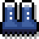 | Snow boots | Tall dark snow boots with a fur cuff and a ridged sole. Worn in the Feet slot in Gear: hold them and tap Feet; tap Feet again to take them off. On Cairn's open ice they keep the feet from freezing and from slipping. Everyone who can see you sees them on your sprite. | the racks of the Windlocks and the Sled Shed on Cairn Station |
Research samples
| Item | What it does | Where to get one | |
|---|---|---|---|
| Assay copper bar | A rare sample from Stores, bought with the research budget (6 research points), not with supply points: a Scientist asks for it at the supply console, anyone who may approve orders approves it, and it lands in a crate on the pad like any order. Hand it in at the R&D console as a project's sample: the data of every run is 10 points better than from an ordinary sample. | the request console, for 6 research points (a Scientist asks) | |
| Reagent set | A rare sample from Stores, bought with the research budget (8 research points), not with supply points: a Scientist asks for it at the supply console, anyone who may approve orders approves it, and it lands in a crate on the pad like any order. Hand it in at the R&D console as a project's sample: the data of every run is 10 points better than from an ordinary sample. | the request console, for 8 research points (a Scientist asks) | |
| Sea sample | A rare sample from Stores, bought with the research budget (10 research points), not with supply points: a Scientist asks for it at the supply console, anyone who may approve orders approves it, and it lands in a crate on the pad like any order. Hand it in at the R&D console as a project's sample: the data of every run is 10 points better than from an ordinary sample. | the request console, for 10 research points (a Scientist asks) | |
| Ice sample | A rare sample from Stores, bought with the research budget (12 research points), not with supply points: a Scientist asks for it at the supply console, anyone who may approve orders approves it, and it lands in a crate on the pad like any order. Hand it in at the R&D console as a project's sample: the data of every run is 10 points better than from an ordinary sample. | the request console, for 12 research points (a Scientist asks) |
Everything else
| Item | What it does | Where to get one | |
|---|---|---|---|
| Crate | A steel storage crate: it holds 8 slots of 8 like things, like the storage crates of the tunnels (Open crate, take out, Put in, Close), but it is movable. An order arrives in one, on the delivery pad. Pull it by hand, or Load it onto the stores cart (three at most) and wheel it to the department that asked. An empty crate on the pad ships for 5 supply points at the supply console; one with things in it stays. Too big for a backpack; it can only be carried while empty. | Stores Bay (6) | |
| Stores cart | The Storekeeper stores cart, parked in the Stores Bay. It cannot be picked up: tap it and Pull it, and it follows your steps one tile behind you, through the doors too (Release lets go). A crate beside you is put on it with Load crate (it carries 3 crates; the crates ride with it) and the last one is put down beside the cart with Unload crate. The things in a crate on the cart cannot be reached: unload it first. Deliver an order by wheeling the cart to the department and unloading the crate there; whoever asked opens it and takes their things out. | Stores Bay | |
| Metal scrap | Metal scrap, an old part of the waste line: load it into the refinery's hopper by hand like ore. Smelting a piece (6 seconds) gives a hull plate. The recycler no longer makes it: it presses metal waste into a hull plate itself. | — | |
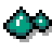 | Glass shards | Glass shards: the old bulb that breaks when the Caretaker changes it, the pieces of a window that cracks. They lie on the floor. On a station with gravity a bare foot that steps on them is cut (any shoes or boots protect); where nothing weighs nobody steps on them. Put them in a bin: the recycler melts glass waste into a glass pane. | — |
| Plastic pellets | Plastic pellets, what the recycler makes of everything that is neither metal nor glass, food scraps and paper included. They land on the delivery pad of Stores, and the Storekeeper sells them there with Ship the pad (1 point each). | — | |
| Planter | A planter with a green plant in it, heavy and no thing to pick up. Stand within a tile and tap Pull the planter: it follows you, one tile behind, until you tap Release. It never blocks a door's lane by itself (it does not stop anyone walking): where it is parked is the puller's choice. | Stores Entrance, Bridge (3), Crew Quarters (3), Central Hub (6) | |
| Flag | The Bridge's flag on its pole. Pick it up with a free hand (it needs one) and carry it. A lighter, a box of matches or a welder in the active hand lights it (Light the flag): it burns 8 seconds, lighting 2 tiles round it, then it is a pile of ash. Whoever holds a burning flag is burned lightly, 2 each second; put it down and it burns on where it lies. The fire spreads to nothing: it heats no air and lights no other thing, so a burning flag beside a closed door, or in a room, never starts a fire on the station. | Bridge (2) | |
| Pile of ash | What a burnt flag leaves: a small pile of grey ash. It does nothing. | — | |
| Crystal nodule | A chunk of crystal (a nodule on the seabed) cut from a deposit on the mine site (Drill, 4 seconds, with the hand drill). It lies where it fell, or goes straight into an ore bag held in a hand. Load ore tips it into the refinery's hopper in the Mining Dock; Smelt (6 seconds) makes a hull plate and a copper bar of it. | — | |
| Fuel drum | A steel drum of diesel with a yellow band, the fuel of the genset on Cairn Station. Hold it and stand beside the fuel tank in the Generator Shed: tap Pour in a drum, a timed job of 6 seconds; the tank takes it when a whole drum fits. A drum runs the genset for 5 minutes at full output; the tank holds 15 minutes. The genset starts by itself when the bank runs low (set it to Auto) but only with fuel, and not when its shed is colder than 255 K: the diesel waxes. Stores sells drums. | request console order (8 points), the Fuel Store and the rack of the Generator Shed, and the supply console, on Cairn Station | |
| Panel brush | Panel brush (built from squeegee and copper bar). Carried while you clean a panel with a squeegee, it makes the work 30 percent faster. A prototype may fail its first use, as every prototype does. | the Robotics bench on Heron, once the Panel coupon test project is released | |
| Joint kit | Joint kit (built from grease can and bolts). Carried while you grease a sun-tracking joint, it saves a third of the repair's time. A prototype may fail its first use, as every prototype does. | the Robotics bench on Heron, once the Joint grease and bolts project is released | |
| Seal bead | Seal bead (built from sealing gasket and base reagent). Carried while you patch a breach or a crack, a bead is run along the seam: the wall wears half as fast from then on, and the bead is used up. Once released, a Miner's ore bag holds 2 more ore (a sealed pouch sewn into it): 8 instead of 6. A prototype may fail its first use, as every prototype does. | the Robotics bench on Heron, once the Vacuum seal project is released | |
| Link meter | Link meter (built from sensor board and copper bar). Beside a relay test rack with it in the hand, tap Fit the link meter: the power monitor then shows the relay's link margin. Once a shift. Once released, the Bridge console shows the Watch Officer and the Station Master the relay link, and the Storekeeper's order list flags the manifests when the link is poor. A prototype may fail its first use, as every prototype does. | the Robotics bench on Heron, once the Link margin project is released | |
| Tether reel | Tether reel (built from cable coil and hull plate and sealing gasket). Carried on an EVA, it holds you when the air tank gives its very-low warning: a short reserve of breath, once in five minutes. Once released, the Infirmary has a rescue lamp and a charged air tank. A prototype may fail its first use, as every prototype does. | the Robotics bench on Heron, once the EVA tether reel project is released | |
| Anode strip | Anode strip (built from hull plate and copper bar). Carried while you reinforce a worn wall with a welder, it is bolted to the wall: the wall wears half as fast from then on, and the strip is used up. A prototype may fail its first use, as every prototype does. | the Robotics bench on Millrace, once the Hull corrosion project is released | |
| Rotor balance kit | Rotor balance kit (built from rotor bearing and rotor seal). Carried while you brush, re-bear or re-seal a seabed rotor, it saves 30 percent of the time. Once the project is released a Watch Officer sees slack water coming on the outdoor jobs board. A prototype may fail its first use, as every prototype does. | the Robotics bench on Millrace, once the Current table project is released | |
| Nodule basket | Nodule basket (built from hull plate and cable coil). Carried while you drill ore, it saves a quarter of the time. The ore bag takes nine pieces instead of six while it is carried (Millrace). A prototype may fail its first use, as every prototype does. | the Robotics bench on Millrace, once the Nodule assay project is released | |
| Pump patch kit | Pump patch kit (built from pump kit and sealing gasket). Carried while you clear a jammed bilge pump, it halves the time. Beside a bilge pump that runs, tap Fit the pump patch: after a breach the silt reaches that pump a minute later, and the patch is used up. Three patches a shift. Once released, Air Works has a standby pump that runs when its own is jammed. A prototype may fail its first use, as every prototype does. | the Robotics bench on Millrace, once the Pump rotor and seals project is released | |
| Survey lamp | Survey lamp (built from flashlight and copper bar and salt reagent). Carried while you drill ore at the seabed, it saves a quarter of the time. Rich nodes within ten tiles are ringed while it is carried. Once released, the Shift Audit has a dive-window line. A prototype may fail its first use, as every prototype does. | the Robotics bench on Millrace, once the Sea-light survey project is released | |
| Seabed sled | A sled (built from servo set and hull plate), the Storekeeper's vehicle on this map in place of the Haul drone. Beside the delivery pad with a crate on it, hold the sled and tap Send the crate with the sled: the crate reaches the request console 12 seconds later and the sled is used up. A prototype sled may fail and leave the crate on the pad. | the Robotics bench on Millrace, once the Seabed sled project is released (the Haul drone's place on that map) | |
| Sharp bit | Sharp bit (built from hull plate and copper bar). Carried while you drill ore or the ice, it saves a quarter of the time (Cairn). A Scientist's snow core is logged for the Directorate while the project is released: 3 research points a core, up to 6 a shift. A prototype may fail its first use, as every prototype does. | the Robotics bench on Cairn, once the Ice core log project is released | |
| Wind gauge | Wind gauge (built from copper bar and salt reagent and hull plate). A Watch Officer carrying it reads the Windlock board's forecast line: the wind a minute ahead (Cairn). Once the project is released the Station Master's Bridge console shows the Calm, Swell and Gale wind card. A prototype may fail its first use, as every prototype does. | the Robotics bench on Cairn, once the Wind and drift project is released | |
| Insulating patch | Insulating patch (built from hull plate and base reagent). Standing in a room with an outer wall, tap Fit the insulating patch: that room loses 40 percent less heat through its walls from then on, and the patch is used up. One room an item, three rooms a shift; cracks, holes and open doors lose heat as before. Once released, the Cold Store thermometer board marks the leaky and the patched rooms. A prototype may fail its first use, as every prototype does. | the Robotics bench on Cairn, once the Heat loss project is released | |
| Glycol can | Glycol can (built from acid reagent and hull plate). Held beside a frozen heating pipe that lies open, tap Pour the glycol into the pipe (8 seconds): the frozen run thaws up to six tiles either way, and the can is used up. Once released the Caretaker's Store has a spare pump kit. A prototype may fail its first use, as every prototype does. | the Robotics bench on Cairn, once the Glycol loop project is released | |
| Crate seal | Crate seal (built from sealing gasket and hull plate). Beside a crate, tap Fit the crate seal: the crate joins the cold chain (a serial number, a line in the ledger) and its cold runs out half as fast, so it holds twice as long out in the warm. Once released, the Infirmary has a sealed cold box (a crate) and the Shift Audit has a spoilage line. A prototype may fail its first use, as every prototype does. | the Robotics bench on Cairn, once the Cold chain project is released | |
| Snow core | A core of old snow from a marked point on Cairn's yard (8 s, a Scientist in half the time; the point is ready again after 3 minutes). It is a mineral sample for a research project at the R&D console: hand it in there. A sample taken out of doors is field data: the finding is a little better, as with a rare sample. | a snow core point on the yard of Cairn Station, taken by hand | |
| Clean ice | A lump of clean ice from the drilling point on Cairn's yard: a hand drill in the active hand (10 s, a Miner in half the time), which brings up ore for the refinery with it; the point is ready again after 45 seconds. The Chef makes an onion broth of it with one onion at a stove. On a burn it is a cold pack: tap Treat and it takes 8 points off the burn damage (a layman takes off half), used up. | the ice drilling point on the yard of Cairn Station, drilled with a hand drill | |
| Ice block | A clear block chipped from the ice face on Cairn's yard by hand (6 s, a Bartender in half the time; ready again after 30 seconds). It is a helping of ice for a glass, it fills the bar's ice bucket at once, and at the mixer it makes an iced cordial with an apple. | the ice face on the yard of Cairn Station, chipped off by hand | |
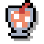 | Iced cordial | A drink of the bar. On Cairn Station, mix ice block and apples at the bar's mixer into a clean glass. Hold it and tap Drink (3 seconds): it fills 9 percent of the hunger meter, and the used glass stays in your hand. It is a soft one: it never makes anyone tipsy. | the bar's mixer on Cairn Station: an ice block and an apple |
| Water sample | A bottle of sea water taken at a marked point on Millrace Station's seabed (8 s, a Scientist in half the time; the point is ready again after 150 seconds). It is a reagent sample for a research project at the R&D console: hand it in there. A sample taken out of doors is field data: the finding is a little better, as with a rare sample. | a water sampling point on the seabed of Millrace Station | |
| Sediment sample | A tube of seabed sediment taken at a marked point on Millrace Station's seabed (8 s, a Scientist in half the time; the point is ready again after 150 seconds). It is a mineral sample for a research project at the R&D console: hand it in there. A sample taken out of doors is field data: the finding is a little better, as with a rare sample. | a sediment sampling point on the seabed of Millrace Station | |
| Kelp | Long fronds of kelp from the bed beside Millrace Station, harvested by hand on a dive (8 s, a Botanist in half the time: 2 bunches; ready again after 3 minutes). The Chef cooks a kelp broth of it with an onion at a stove; it also does as a plant sample for research. | the kelp bed on the seabed of Millrace Station, harvested by hand | |
| Kelp broth | A green broth of seabed kelp and onion, Millrace Station's own dish: it fills 47 percent of the hunger meter. | the Chef's stove on Millrace Station: kelp and an onion | |
| Sand | A chunk of sand cut from a sand deposit on the mine site (Drill, 4 seconds, with the hand drill). Load ore tips it into the refinery's hopper; Smelt (6 seconds) melts it into a glass pane (the ore counter takes it). | — | |
| Glass pane | A pane of glass, melted from sand at the refinery or from glass waste at the recycler. The Caretaker turns it into 3 lightbulbs (Make bulbs), any hand into 4 glass vials at the Chemistry dispenser (Make vials), and it mends a cracked window (Mend window, 6 seconds). | — | |
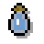 | Glass vial | A glass vial. The Chemistry dispenser fills one with each injectable it presses (the epinephrine pen and morphine), so each of those uses up one vial; pills and ointment need none. The racks start with some and a glass pane makes more (Make vials at the dispenser). | Chemistry (8) |
| Emergency cell | An emergency cell for a room's power panel (the name says its charge). A full one gives the room's emergency light for 2 minutes after its power goes and drains while the light burns; once the power is back the cell in the panel fills again (about 5 minutes from empty). A spent cell gives no light: the room goes fully dark. The Station Engineer (or a card with engineering access) stands at the panel with a cell in hand and taps Swap the emergency cell: the old one comes out into the hand with its charge (to the nearest ten below). A spent cell left in a panel on a powered room fills again there; there is no charger. The panel's line and the power monitor say which rooms run low. | request console order (6 points), a rack of the Engineering store (three spares on every station) and the supply console, a crate of 4 for 6 points | |
| Emergency cell (90%) | An emergency cell for a room's power panel (the name says its charge). A full one gives the room's emergency light for 2 minutes after its power goes and drains while the light burns; once the power is back the cell in the panel fills again (about 5 minutes from empty). A spent cell gives no light: the room goes fully dark. The Station Engineer (or a card with engineering access) stands at the panel with a cell in hand and taps Swap the emergency cell: the old one comes out into the hand with its charge (to the nearest ten below). A spent cell left in a panel on a powered room fills again there; there is no charger. The panel's line and the power monitor say which rooms run low. | — | |
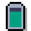 | Emergency cell (80%) | An emergency cell for a room's power panel (the name says its charge). A full one gives the room's emergency light for 2 minutes after its power goes and drains while the light burns; once the power is back the cell in the panel fills again (about 5 minutes from empty). A spent cell gives no light: the room goes fully dark. The Station Engineer (or a card with engineering access) stands at the panel with a cell in hand and taps Swap the emergency cell: the old one comes out into the hand with its charge (to the nearest ten below). A spent cell left in a panel on a powered room fills again there; there is no charger. The panel's line and the power monitor say which rooms run low. | — |
| Emergency cell (70%) | An emergency cell for a room's power panel (the name says its charge). A full one gives the room's emergency light for 2 minutes after its power goes and drains while the light burns; once the power is back the cell in the panel fills again (about 5 minutes from empty). A spent cell gives no light: the room goes fully dark. The Station Engineer (or a card with engineering access) stands at the panel with a cell in hand and taps Swap the emergency cell: the old one comes out into the hand with its charge (to the nearest ten below). A spent cell left in a panel on a powered room fills again there; there is no charger. The panel's line and the power monitor say which rooms run low. | — | |
| Emergency cell (60%) | An emergency cell for a room's power panel (the name says its charge). A full one gives the room's emergency light for 2 minutes after its power goes and drains while the light burns; once the power is back the cell in the panel fills again (about 5 minutes from empty). A spent cell gives no light: the room goes fully dark. The Station Engineer (or a card with engineering access) stands at the panel with a cell in hand and taps Swap the emergency cell: the old one comes out into the hand with its charge (to the nearest ten below). A spent cell left in a panel on a powered room fills again there; there is no charger. The panel's line and the power monitor say which rooms run low. | — | |
| Emergency cell (50%) | An emergency cell for a room's power panel (the name says its charge). A full one gives the room's emergency light for 2 minutes after its power goes and drains while the light burns; once the power is back the cell in the panel fills again (about 5 minutes from empty). A spent cell gives no light: the room goes fully dark. The Station Engineer (or a card with engineering access) stands at the panel with a cell in hand and taps Swap the emergency cell: the old one comes out into the hand with its charge (to the nearest ten below). A spent cell left in a panel on a powered room fills again there; there is no charger. The panel's line and the power monitor say which rooms run low. | — | |
| Emergency cell (40%) | An emergency cell for a room's power panel (the name says its charge). A full one gives the room's emergency light for 2 minutes after its power goes and drains while the light burns; once the power is back the cell in the panel fills again (about 5 minutes from empty). A spent cell gives no light: the room goes fully dark. The Station Engineer (or a card with engineering access) stands at the panel with a cell in hand and taps Swap the emergency cell: the old one comes out into the hand with its charge (to the nearest ten below). A spent cell left in a panel on a powered room fills again there; there is no charger. The panel's line and the power monitor say which rooms run low. | — | |
| Emergency cell (30%) | An emergency cell for a room's power panel (the name says its charge). A full one gives the room's emergency light for 2 minutes after its power goes and drains while the light burns; once the power is back the cell in the panel fills again (about 5 minutes from empty). A spent cell gives no light: the room goes fully dark. The Station Engineer (or a card with engineering access) stands at the panel with a cell in hand and taps Swap the emergency cell: the old one comes out into the hand with its charge (to the nearest ten below). A spent cell left in a panel on a powered room fills again there; there is no charger. The panel's line and the power monitor say which rooms run low. | — | |
| Emergency cell (20%) | An emergency cell for a room's power panel (the name says its charge). A full one gives the room's emergency light for 2 minutes after its power goes and drains while the light burns; once the power is back the cell in the panel fills again (about 5 minutes from empty). A spent cell gives no light: the room goes fully dark. The Station Engineer (or a card with engineering access) stands at the panel with a cell in hand and taps Swap the emergency cell: the old one comes out into the hand with its charge (to the nearest ten below). A spent cell left in a panel on a powered room fills again there; there is no charger. The panel's line and the power monitor say which rooms run low. | — | |
| Emergency cell (10%) | An emergency cell for a room's power panel (the name says its charge). A full one gives the room's emergency light for 2 minutes after its power goes and drains while the light burns; once the power is back the cell in the panel fills again (about 5 minutes from empty). A spent cell gives no light: the room goes fully dark. The Station Engineer (or a card with engineering access) stands at the panel with a cell in hand and taps Swap the emergency cell: the old one comes out into the hand with its charge (to the nearest ten below). A spent cell left in a panel on a powered room fills again there; there is no charger. The panel's line and the power monitor say which rooms run low. | — | |
| Emergency cell (spent) | An emergency cell for a room's power panel (the name says its charge). A full one gives the room's emergency light for 2 minutes after its power goes and drains while the light burns; once the power is back the cell in the panel fills again (about 5 minutes from empty). A spent cell gives no light: the room goes fully dark. The Station Engineer (or a card with engineering access) stands at the panel with a cell in hand and taps Swap the emergency cell: the old one comes out into the hand with its charge (to the nearest ten below). A spent cell left in a panel on a powered room fills again there; there is no charger. The panel's line and the power monitor say which rooms run low. | — |
Item skins
A skin is a colour and texture variant of an item and nothing else. It belongs to the item itself, as a weapon skin does in a shooter: it stays on the item when it is put down, put on a table or in a closet or passed on, everyone sees it, and the next shift starts every item plain. It never changes what an item does. Pick the skin your items take in the menu's Locker (all free for now).
Pen: 15 skins
 Greywater Slate
Greywater Slate Sluice Brass
Sluice Brass Keel Oak
Keel Oak- Millrace Copper
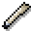
Rotor Bone- Moon Pool Blue
 Brine Glass
Brine Glass- Kelpwrap Green
 Floodlight Yellow
Floodlight Yellow Ward Tile
Ward Tile Ballast Iron
Ballast Iron Tidal Ledger Red
Tidal Ledger Red Lantern Amber
Lantern Amber Sea-Light Lilac
Sea-Light Lilac- Ration Grey
Flashlight: 6 skins
 Standard Grey
Standard Grey Rust Wrap
Rust Wrap- Tidal Blue
 Kelp Green
Kelp Green Directorate Red
Directorate Red Aurora Violet
Aurora Violet
Lighter: 6 skins
 Standard Steel
Standard Steel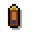
Rust Brass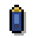
Tidal Enamel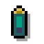
Kelp Enamel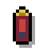
Seal Red Enamel Aurora Enamel
Aurora Enamel
Wrench: 6 skins
 Plain Steel
Plain Steel Rust Grip
Rust Grip Tidal Grip
Tidal Grip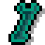
Kelp Grip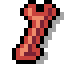
Seal Red Grip Aurora Grip
Aurora Grip
Never skinned, because the look carries information:
- A stamp is identity: a department's mark is told apart by its colour and shape, and an approval must be read at a glance.
- An ID card is access and identity: its look is how others check whose it is.
- Papers and forms carry information (text, stamps, signatures); a look would hide or fake it, and they are evidence.
- A medicine is told apart by its label and colour; a look could make a drug be mistaken for another.
- A tank's colour says what gas it holds; nobody may mistake an air tank for an empty one.
- Suits, helmets and worn safety gear show what protects the wearer; their look is a safety signal.
- Keys and keycards are access; their look must stay the one the crew knows.
Supply orders cost supply points and land on the pad in the stores bay 40 s after their approval (20 s when Storekeeper approves them), one at a time; see How to play.